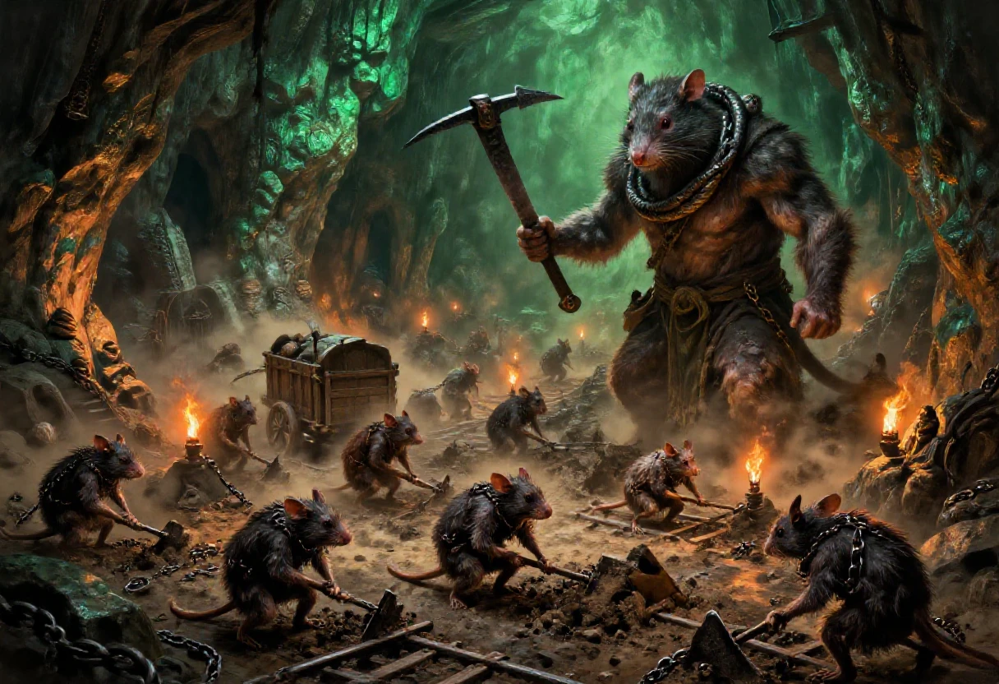
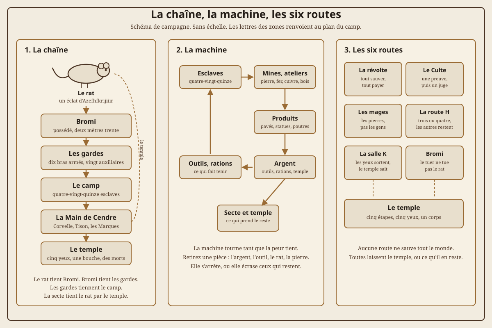
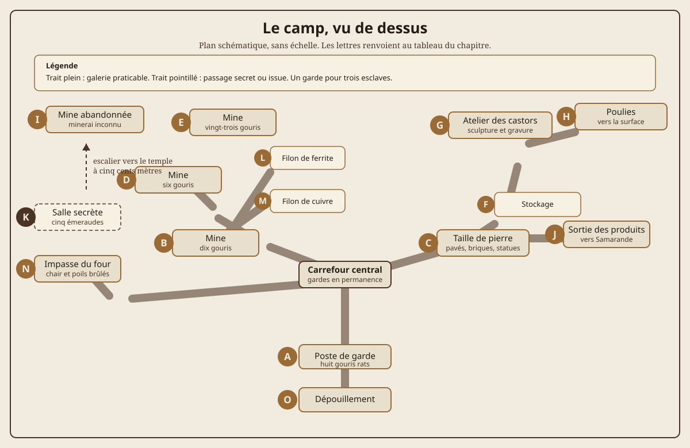

Voici le plus long scénario du recueil, et le plus dur. Je l'ai écrit en 1999 ou 2000, puis retapé le 2 juillet 2001. Il était prévu pour faire suite à deux autres scénarios que je n'ai jamais rédigés, et je l'ai longtemps gardé de côté parce qu'il ne ressemble pas aux autres : on n'y cambriole pas une maison, on n'y négocie pas un contrat. On y est capturé, battu, et vendu au travail.
Le fichier d'origine est un document de travail, avec ses abréviations, ses fautes de frappe et un plan de camp décrit par des lettres, de A à O, dont le dessin ne nous est pas parvenu. Je l'ai restructuré en actes, j'ai redessiné le plan, et j'ai complété ce qui manquait. Le fond est de moi, la mise en scène est de cette édition. Aucun texte de tiers n'est reproduit.
Un avertissement, et il est sérieux. Le scénario contient de l'esclavage, des coups, des privations, des exécutions et des violences sexuelles évoquées. Il n'est pas conseillé pour une première partie de Nightprowler, et il demande l'accord explicite de toute la table avant la première séance. La section « Mener la table », à la fin, explique comment couper ce qui doit l'être sans perdre le cœur du scénario.
Ce scénario n'est pas une partie de cambriolage. C'est une partie de survie, de captivité et de sortie. Les personnages commencent libres, perdent tout, et doivent décider ce qu'ils sont prêts à sacrifier pour rendre la liberté aux autres. Le meneur doit le savoir avant de poser la première scène, parce que la table le sentira dès la première heure.
| Rubrique | Valeurs |
|---|---|
| Type | Scénario complet de capture, de survie et d'évasion, avec une campagne possible. |
| Meneur | Un seul meneur. Le scénario demande de tenir plusieurs camps à la fois : les gardes, les esclaves, les acheteurs et la secte. |
| Joueurs | Trois à cinq, plus le meneur. Quatre est le meilleur format. |
| Personnages | Gouris de seize à trente ans, dont au moins un gouri taupe. Origine sociale -2 ou -3. Un personnage extérieur, humain, félis ou umélorien, est possible, mais il rend la captivité plus dangereuse et le racisme plus visible. |
| Règles | Nightprowler, version 1.x. La volonté facultative du chapitre VI est recommandée. Les règles de possession du chapitre VIII s'appliquent à l'entité du rat. |
| Durée | Quatre séances de trois à quatre heures, ou trois séances longues. En convention, une seule séance de quatre heures en coupant la marche et les ateliers. |
| Lieu | Samarande, galeries basses et quartier des Hautes Lices, puis camp à quinze kilomètres dans les montagnes. Le temple est en construction à un ou deux kilomètres du camp. |
| Ton | Claustrophobie, humiliation, solidarité, rage froide. L'horreur est sociale avant d'être graphique. |
| Avertissements | Esclavage, coups, privations, exécutions, violences sexuelles évoquées, mort de personnages, possession, sacrifice. |
| Sécurité | Accord explicite de toute la table avant la première séance. Ligne et voile, pause à tout moment, ellipse obligatoire pour les violences sexuelles, possibilité de sortir une scène du cadre sans perdre le personnage. |
| Prérequis | Avoir lu la section « Mener la table » de ce chapitre. Le meneur qui improvise la fin risque de transformer la libération du camp en bataille interminable. |
| Ce que le scénario n'est pas | Ce n'est pas une apologie de la violence, ni un bac à sable où les joueurs peuvent tout faire. C'est l'histoire de gens à qui on a retiré leurs droits et qui décident de les reprendre, ou de mourir en essayant. |
Le scénario se lit comme une campagne courte, pas comme une suite de salles. Chaque acte enlève quelque chose aux personnages : leurs affaires, leur liberté, leur nom, leur dignité, puis leur espoir. Chaque acte leur rend aussi quelque chose : une information, un allié, un outil, une colère utile. Le meneur doit veiller à cet équilibre. Un acte qui ne reprend rien n'avance pas, un acte qui ne rend rien éteint la table.
Une équipe de gouris survit dans les galeries de Samarande. Les tiroirs sont vides, les poches aussi, et il faut trouver de l'argent. Un jour, deux membres de la bande, Emil et Mil, entendent des cris devant eux : des cris de détresse mêlés à des claquements de fouet et à des coups sourds. Une famille de gerboises est battue et traînée dans l'eau poisseuse par trois gouris rats et un surmulot.
Derrière les brutes, il y a Bromi. Un gouri rat musqué de deux mètres trente, une légende vivante des fonds gouris, celui qui a organisé quinze ans plus tôt une expédition vengeresse contre un groupe de félis qui s'efforçait de monter les habitants de la surface contre les gouris. Les gouris lui doivent beaucoup. Et on le retrouve aujourd'hui en train de s'en prendre à ses propres congénères avec mépris et dédain.
Ce que personne ne sait, c'est que Bromi est dominé par un rat, un simple rat enroulé autour de son cou. Une entité maléfique s'y est incarnée. Elle se nourrit de la cupidité, de la haine et surtout de l'asservissement et de la détresse des faibles. Le camp qu'elle fait creuser n'est pas une entreprise minière : c'est le financement d'une secte démoniaque, et le début d'un temple.
Bromi a été un héros. Pas un héros de chanson, un de ceux dont les gouris parlent à voix basse parce qu'il a fait ce que personne d'autre n'osait faire. Il y a quinze ans, quand un groupe de félis a tenté de monter les habitants de la surface contre les gouris des fonds, il a rassemblé une expédition, il est monté, et il est revenu avec des oreilles accrochées à sa ceinture. Les gouris lui doivent une part de leur fierté. C'est pour cela que personne ne comprend ce qu'il est devenu.
Ce qu'il est devenu porte un nom, mais ce nom n'est pas le sien. Le rat enroulé autour de son cou est un éclat d'Azefhfkrijiiir, le même nom que celui qui pourrit dans le chapitre VIII, prononcé ici avec l'accent des fonds. L'éclat est petit, assez petit pour tenir dans une bête, assez grand pour tenir un camp. Il ne peut posséder qu'une personne à la fois. Il a choisi Bromi parce que Bromi était fort, craint, et qu'il portait déjà la faille qu'il fallait : la conviction que les faibles n'ont que ce qu'ils méritent.
Le rat mord Bromi régulièrement. La morsure n'est pas une punition, c'est une laisse. Elle le drogue, le calme entre deux rages, et garde la voix de l'entité dans son oreille. Bromi croit commander. Il donne des ordres, il punit, il compte les charrettes. Le rat le laisse croire, parce qu'un camp tenu par un géant effrayé est plus rentable qu'un camp tenu par un rat.
La secte s'appelle la Main de Cendre. Elle est vieille, pauvre et patiente. Elle recrute parmi les endettés, les désespérés et les ambitieux, et elle ne promet jamais rien d'autre que la servitude en échange d'un rang. Son dogme tient en une phrase : celui qui accepte sa chaîne est plus libre que celui qui la refuse. Elle n'a pas encore de temple, et c'est tout l'enjeu. Le camp est sa première vraie fondation. Trois de ses membres y vivent : Sœur Corvelle, qui recrute et teste les nouveaux ; Frère Tison, qui garde le chantier du temple et n'a jamais refusé un meurtre ; Maître Caboche, l'acheteur humain, qui ferme les yeux sur le reste tant que les comptes sont bons. La Main, le chef véritable, ne vient jamais au camp. Son nom est une affaire de politique, et le meneur peut le choisir parmi les notables de Samarande.
Les cinq émeraudes ne sortent pas de la mine. Elles ont été trouvées en I, derrière la paroi qui résiste aux pioches, dans une niche que personne n'avait ouverte depuis des siècles. La secte croit qu'elles sont les cinq yeux de l'entité. Ce sont des focus d'énergie divine maléfique, et chacun d'eux a un nom, une promesse et un prix. La Main de Cendre les utilise pour tester les recrues et pour charger le temple. Le temple a besoin des cinq yeux, d'une bouche et d'ossements : les yeux sont les émeraudes, la bouche sera l'autel, et les ossements sont les pierres taillées par les esclaves. À la consécration, le temple sera un corps.
Voilà ce que les joueurs croient. Ils croient que Bromi est un traître, un marchand d'esclaves et un monstre. Ils ont raison. Ils croient que le camp est une mine. C'est une machine. Ils croient que le temple est une folie de fanatiques. C'est une porte. Ils croient que le rat est un animal de compagnie, une bizarrerie, un trophée. C'est le véritable maître du camp. L'écart entre ce qu'ils croient et ce qui est vrai est le moteur du scénario. Le meneur ne le comble pas par un discours : il le laisse se creuser, scène après scène, jusqu'à ce que la table comprenne qu'elle a passé trois séances dans le ventre de quelque chose.
Si personne n'intervient, le temple avance. Les convois de pierre partent toutes les dix nuits. Les victimes du rituel sont choisies parmi les esclaves les plus faibles ou les plus rebelles. À la huitième étape, la Main de Cendre consacre le temple avec les cinq émeraudes et les habitants du camp. Les esclaves sont murés dans les fondations, Bromi reçoit un nouveau corps, et la secte ouvre une cellule à Samarande. Le chapitre XII commence alors, et les personnages ne sont plus des témoins : ils sont des responsables.
Le meneur doit tenir ce compte à rebours à jour. Il ne s'agit pas d'un minutage rigide, mais d'un instrument de pression. Les horloges se remplissent à la fin de chaque séance et à chaque événement marquant. Certaines sont publiques, dessinées sur la table : le camp, le temple, les alliés. D'autres restent dans les notes du meneur : le rat, la ville. Une horloge pleine ne déclenche pas une scène automatique. Elle change la situation, et la table doit sentir le changement avant de le comprendre.
| Horloge | Segments | Ce qui la fait avancer | Au dernier segment |
|---|---|---|---|
| Le camp | 6 | Chaque tentative de fuite repérée, chaque garde tué, chaque révolte écrasée, chaque ration volée pour un fugitif. | Bromi fait un exemple public : dix esclaves partent pour N, et les autres regardent. Les auxiliaires deviennent plus zélés, les mineurs plus silencieux. |
| Le temple | 8 | Chaque convoi de pierre, chaque émeraude sortie de K, chaque victime du rituel, chaque jour passé sans que le chantier soit signalé. | La consécration. Le temple s'éveille, le camp devient le premier sacrifice, et la Main de Cendre n'a plus besoin de cacher ses recrues. |
| Le rat | 6 | Chaque marché accepté par un personnage, chaque émeraude utilisée, chaque acte de cruauté commis sans nécessité, chaque espoir abandonné. | Le rat peut quitter Bromi et choisir un nouveau porteur. Il préfère un personnage à un garde, parce qu'un personnage sort du camp. |
| La ville | 4 | Chaque disparition signalée, chaque acheteur doublé, chaque preuve montrée à un tiers, chaque rumeur qui remonte jusqu'aux Hautes Lices. | Une patrouille, le Culte de la Pensée ou un mage arrive. Personne ne contrôle ce qui entre, et personne ne contrôle ce qui sort. |
| Les alliés | 4 | Chaque évadé sauvé, chaque preuve réunie, chaque faction convaincue, chaque dette payée. | Les alliés sont prêts. Ils ne sont pas forcément ceux que les personnages attendaient, et ils auront un prix. |
Une horloge pleine n'est pas une fin. C'est une nouvelle contrainte. Si le camp est à 6, les personnages peuvent encore s'évader, mais ils laissent derrière eux des gens qui vont mourir à leur place. Si le temple est à 8, ils peuvent encore interrompre la consécration, mais le temple est déjà un corps à moitié vivant. Si le rat est à 6, ils peuvent encore le tuer, mais il a déjà goûté à l'un d'eux. Le meneur choisit ce qui reste possible, et il le dit par la fiction, jamais par une règle.

Le schéma ci-dessus donne la structure de la campagne, pas un plan de salle. Le rat est au sommet de la chaîne, mais il dépend du temple. La secte dépend du camp. Le camp dépend des esclaves. Retirer une pièce ne suffit pas : il faut savoir laquelle, et à quel prix. Le plan du camp, plus loin, donne les zones et les distances. Les deux images ne se lisent pas l'une sans l'autre.
Les Hautes Lices sont un quartier de Samarande construit sur des terrasses, entre l'ancienne muraille et le marché haut. Les humains et les félis vivent au-dessus, dans des maisons à colombages, des ateliers de tisserands et des cours plantées de treilles. Les gouris vivent en dessous, dans les galeries qui servent de caves, de drains et de rues oubliées. Le quartier n'est pas misérable au sens des bas-fonds. Il est respectable, ce qui est pire. Les gens d'en haut savent que les gouris sont en bas, et ils paient pour ne pas avoir à y descendre.
La bande a choisi ce quartier parce qu'il est proche de la surface sans être l'un des points de passage connus des humains. Les galeries y sont anciennes, sèches, et communiquent avec les caves de plusieurs maisons. On y entend les conversations des cuisines, le pas des patrouilles et, certaines nuits, le grincement des charrettes qui remontent du postern. C'est un endroit où l'on peut disparaître, à condition de ne pas faire de bruit et de ne pas voler les mauvaises personnes.
| Lieu | Ce qu'on y trouve | Ce que le meneur peut en faire |
|---|---|---|
| La place des Trois Cordes | Le marché haut, un pilori de bois, un puits à margelle. Les étals ferment à la tombée du jour. | Le point de départ des rumeurs. C'est là qu'on entend parler des disparitions et des charrettes de nuit. |
| Le puits de la Treille | Un puits couvert, une pompe cassée, une échelle de fer qui descend dans les galeries. | L'entrée principale de la bande. Gardée par un guetteur, fermée par une trappe que les gouris savent soulever. |
| La galerie des Pleurs | Un ancien drain voûté, humide, qui suinte en été comme en hiver. Le logis de la bande est au fond. | Le refuge. Assez large pour quatre, trop étroit pour dix. Deux cachettes, un conduit de chaleur vers le four du boulanger. |
| Le poste sud | Une salle de registre tenue par un clerc humain, deux gardes et un coffre de fiches. | Le lieu où les gouris sont recensés, taxés et parfois vendus. Le clerc peut être acheté, mais il vend cher. |
| La maison Migeon | Un terrier sous la boutique d'un boulanger, une porte de cave, trois générations de gerboises. | La famille que Bromi attaque dans la scène d'ouverture. Le père a été pris trois semaines plus tôt. |
| Le cellier de la Veuve | Une taverne de la rue haute, une cave voûtée, un bureau où Maître Caboche reçoit ses clients. | Le lieu où l'argent du camp rencontre l'argent de la ville. On y trouve des contrats, des noms et des dettes. |
| Le postern des Lices | Une poterne murée à moitié, un chemin de rondins qui monte vers les collines, des ornières de charrette. | La route des convois. Les traces sont fraîches une nuit sur dix, et personne ne semble s'en étonner. |
Le logis de la bande est un cul-de-sac de la galerie des Pleurs, fermé par une porte de planches et un rideau de toile. Il y a un fourneau de briques relié au four du boulanger, une table basse, quatre paillasses et un coffre sans serrure parce que la serrure a été vendue. Les deux cachettes sont derrière une pierre descellée, à gauche de la porte, et sous une dalle, au pied de la paillasse du fond. Elles peuvent contenir un personnage chacune, à condition qu'il accepte de rester immobile pendant des heures, sans lumière et sans bruit. La pierre est chaude quand le boulanger allume son four. C'est agréable en hiver, et c'est ce qui perdra les personnages : ils croiront que la cachette est sûre parce qu'elle est chaude.
La famille Migeon est une famille de gerboises qui vit sous la boutique depuis plus longtemps que le boulanger. Le père, Migeon, a été pris trois semaines avant l'ouverture, lors d'une rafle que personne n'a vue. La mère, Nour, tient la maison et travaille à la journée chez le boulanger. Les enfants s'appellent Pia, Sifflet et le petit, qui n'a pas encore de nom parce qu'on attend qu'il survive à l'hiver. Pia a douze ans, elle court plus vite que la plupart des adultes et elle connaît les galeries de surface mieux que les personnages. Sifflet a huit ans, il ne parle presque plus depuis le départ de son père, mais il entend tout. Nour sait que Migeon est vivant. Elle ne sait pas où. Elle acceptera n'importe quel marché qui la rapproche de lui, et elle n'oubliera pas ceux qui l'auront aidée ou trahie.
Le quartier vit dans un silence organisé. Les habitants d'en haut ne disent pas qu'ils savent, mais ils laissent des seaux de nourriture au bord des trappes, ils ferment les yeux sur les vols de pain et ils appellent la patrouille quand un gouri devient trop visible. Ce n'est pas de la bonté, c'est de la gestion. Le meneur doit le montrer par des gestes, pas par un discours : une femme qui pousse une miche sous une grille, un homme qui crache par terre en détournant le regard, un enfant qui demande à son père pourquoi les rats parlent. La ville n'est pas un décor. C'est un personnage qui préfère ne pas voir.
La scène d'ouverture se joue dans une galerie large, au retour d'une journée sans rien. Emil est un contrebandier faible et peu endurant ; son frère Mil le suit partout pour le protéger. Ils sont orphelins depuis que leurs parents ont été massacrés sous leurs yeux, lors d'une descente de purification menée par un groupe de félis. Les deux frères entendent les cris avant les autres.
Si les personnages s'approchent, ils découvrent la famille gerboise qu'ils connaissent de vue, battue par trois gouris rats et un surmulot. La scène doit être décrite sans complaisance et sans lenteur : les coups, l'eau sale, les enfants qui se taisent parce qu'ils ont compris que crier ne sert à rien. Puis Bromi arrive, suivi de trois ou quatre congénères. Il ne négocie pas. Il ne répond pas aux questions. Toute tentative de raisonnement se solde par un échec cuisant.
Les joueurs ont deux choix, et aucun n'est bon. Combattre : ils ne sortiront pas vainqueurs. Courir et se barricader dans leur logis : Emil, très peu endurant, empêche la fuite effrénée, et le logis est justement sur leur chemin. Dans un cas comme dans l'autre, le groupe est capturé, sauf peut-être deux personnages qui pourront profiter des deux seules cachettes prévues dans leur repaire. S'ils ont tenté de sauver la famille gerboise et de la cacher, leur situation est encore moins bonne.
La capture doit être jouée, pas racontée. Laissez les joueurs essayer, laissez-les réussir des actions isolées, puis montrez que le nombre et la force ne se discutent pas. Bromi ne tue pas tout de suite : il a besoin de bras. Les personnages les plus téméraires sont assommés, les autres intimidés. Un personnage qui insiste peut mourir, et le meneur ne doit pas reculer devant cette possibilité : c'est elle qui donne son poids à la suite.
Il faut comprendre pourquoi Bromi attaque la famille Migeon ce soir-là. Le père, Migeon, est au camp depuis trois semaines. Il connaît les anciennes galeries mieux que les gardes, et il a déjà tenté de s'échapper une fois. Bromi garde sa famille pour le tenir. La rafle n'est pas une colère : c'est une démonstration. Les gouris des Hautes Lices doivent savoir qu'un fugitif paie par les siens. Les personnages ne sont pas la cible. Ils sont au mauvais endroit, au mauvais moment, et c'est précisément ce que le scénario attend d'eux.
| Entrée | Ce qui se passe | Ce qu'ils apprennent | Ce qu'ils perdent |
|---|---|---|---|
| Ils chargent | Le combat est court et déséquilibré. Les gouris rats utilisent des filets et des gourdins. Bromi arrive au deuxième tour et ne frappe pas pour tuer. | Bromi est plus fort que sa réputation. Il parle peu, il ne négocie pas, et ses hommes lui obéissent sans discuter. | Deux personnages au sol, un blessé grave, la famille Migeon dispersée. Les cachettes restent accessibles si quelqu'un a couru. |
| Ils reculent et suivent | Ils laissent la famille être battue et suivent la colonne à distance. Le meneur décrit les cris qui s'éloignent et le silence qui revient. | La route de la marche, l'existence du postern, le nombre de gardes. Ils savent où l'on va, pas ce qu'il y a au bout. | La famille Migeon est prise. Nour et Pia se souviendront qu'ils n'ont pas bougé. Les personnages gardent leurs affaires, ce qui rend la capture suivante plus humiliante. |
| Ils se barricadent | Le logis est sur le chemin de la colonne. Les gardes entrent par la porte et par le conduit du four. Les cachettes peuvent sauver deux personnages au maximum. | Le logis n'est pas un refuge, c'est une souricière. La galerie des Pleurs n'a qu'une sortie connue. | Le logis est saccagé, les réserves volées, la porte arrachée. Les personnages cachés entendent tout et ne peuvent rien faire. |
La capture n'est pas une punition infligée aux joueurs. C'est une scène de passage. Bromi veut des bras, pas des cadavres : il choisit les plus solides, il laisse les blessés graves au bord de la galerie, et il emmène les autres. Les personnages sont dépouillés à O, à cinq mètres de l'entrée du camp, et chacun perd quelque chose qui comptait. Le meneur ne demande pas « que portez-vous ? ». Il demande « qu'est-ce que vous ne voulez pas qu'on vous prenne ? ». La réponse est ce que Bromi prend en premier.
| Ce qui est pris | Ce que cela faisait | Ce qu'il en reste |
|---|---|---|
| L'arme | Un bonus de +1 ou +2 aux attaques, selon sa qualité. | Elle est jetée dans le coffre de O. On peut la récupérer lors d'une visite à A, ou la remplacer par un manche de pioche. |
| L'outil | Un bonus de +2 à une compétence : crochetage, serrurerie, déplacement silencieux, premiers soins. | Il est confisqué avec les armes. Sans lui, la compétence se joue à -2, ou avec un objet improvisé qui casse sur un échec. |
| Le souvenir | Un objet personnel qui donne un point de volonté tant qu'il est porté. | Il reste dans la poche du garde qui l'a pris. Le retrouver est une scène en soi, et le garde ne s'en souvient peut-être même pas. |
| Le nom | Le personnage est quelqu'un, avec une famille, un quartier, une réputation. | Le camp lui donne un numéro peint sur une planche. Les gardes ne l'appellent plus autrement. Les autres esclaves, eux, retiennent les noms. |
| Les vêtements | La chaleur, la dignité, les poches. | On leur laisse une tunique de toile et une couverture si le garde est de bonne humeur. La nuit, le froid descend. |
| L'argent | De quoi acheter un repas, une faveur, une corde. | Il est partagé entre les gardes. Vesse garde les pièces reconnaissables et les dépense à la taverne du postern, ce qui laisse une trace. |
Les deux cachettes valent une scène à part. Un personnage qui s'y glisse voit la capture sans pouvoir intervenir. Le joueur décrit ce qu'il entend : les cris, les coups, la voix de Bromi, le silence de la famille Migeon. Puis il choisit. Il peut suivre la colonne de loin, ce qui le mène à l'acte II avec une longueur d'avance. Il peut retourner en ville chercher du secours, ce qui ouvre la route des alliés mais lui fait manquer la marche. Il peut abandonner, et le meneur l'accepte : le personnage quitte le scénario et devient un PNJ qui reparaît plus tard, avec la honte de celui qui n'est pas revenu. Dans tous les cas, le meneur coupe entre les deux groupes toutes les quinze minutes, et il ne laisse jamais la scène solo durer plus de dix minutes.
Un personnage peut mourir dans l'acte I. Le meneur ne triche pas. Il laisse la scène se dérouler, il décrit la mort sans complaisance, et il propose au joueur de reprendre un PNJ : Pia si elle a survécu, Migeon s'il est encore au camp, ou Groule, le jeune garde qui n'a pas encore tout à fait cessé d'être un gouri. Le scénario appartient au groupe, pas à la fiche. Un personnage qui meurt en essayant de sauver la famille Migeon laisse une dette que les autres devront porter, et c'est une motivation plus solide qu'un point de vie en moins.
On les mène à plus de quinze kilomètres, une journée de marche de nuit et de jour, vers les montagnes les plus proches, déjà à plus de cinq kilomètres des murailles extérieures. Les personnages qui ont un minimum le sens de l'orientation comprennent qu'ils ont quitté Samarande et Bejofa au bout de dix kilomètres. La marche traverse des galeries abandonnées, considérées comme dangereuses, et pour cause : on y croise des hélodermes et une famille de buzzuks. Les personnages trouvent même sur leur passage un buzzuk au crâne fendu, couvert de traces de coups portés avec un objet contondant de grande taille.
Ces anciennes galeries forment un labyrinthe que Bromi semble parfaitement connaître. C'est l'occasion de donner aux joueurs une première occasion de fuite : un garde qui s'éloigne, un tunnel qui se sépare, une corde mal nouée. Le meneur doit prévoir au moins un ou deux gouris qui parviennent à s'échapper, en particulier si aucun personnage ne s'est caché dans le logis. Ceux qui se sont cachés essaieront de filer le groupe, et le meneur leur donnera une scène à part, plus courte, plus silencieuse, où ils suivent la colonne de loin.
La colonne n'est pas une file indistincte. Sa forme dit aux joueurs où sont les gardes, qui peut parler à qui, et par où une fuite est possible. Le meneur décrit l'ordre une fois, au départ, puis il le rappelle par des détails : la lanterne de tête, la corde qui relie les poignets, le bâton de Skarn qui tape le sol en queue.
| Position | Qui | Ce que cela permet | Ce que cela coûte |
|---|---|---|---|
| La tête | Bromi, deux gardes, une lanterne sourde, un chariot de vivres. | Voir la route, les signes de Bromi, les passages qu'il évite. C'est la place de celui qui veut comprendre où l'on va. | Bromi entend tout ce qui se dit devant. Il ne se retourne pas souvent, mais il n'a pas besoin de le faire. |
| Le milieu | Six à huit prisonniers attachés par une corde, deux gardes, les outres d'eau. | Parler aux autres esclaves, identifier un allié, passer un objet de main en main, repérer les cordes usées. | Les gardes sont au contact. Un geste suspect coûte un coup de bâton, et le voisin le paie aussi. |
| La queue | Skarn, deux gardes, les traînards, le sac des fouets. | Ralentir, se laisser distancer, profiter d'un virage. C'est la place de celui qui veut disparaître. | Skarn frappe d'abord les traînards. Il aime le bruit du fouet sur la roche, et il n'aime pas les retardataires. |
| Les flancs | Un garde de chaque côté, parfois un auxiliaire avec une torche. | Créer une diversion, attirer un garde vers une galerie latérale, lui faire peur avec un bruit. | Les flancs se répondent. Un garde qui disparaît est remplacé en un tour, et la colonne s'arrête. |
Les occasions de fuite ne sont pas des portes ouvertes. Ce sont des fenêtres qui se referment. Le meneur les décrit sans les nommer : « le garde de gauche s'arrête pour uriner contre la paroi », « la corde qui relie les poignets des deux derniers frotte sur une arête », « la galerie se sépare en deux, et Bromi prend à droite sans ralentir ». Les joueurs décident. Le meneur ne leur demande pas de jeter les dés avant d'avoir décidé ce qu'ils risquent.
| Occasion | Ce qu'il faut faire | Ce qui suit |
|---|---|---|
| Le garde s'éloigne | Se déplacer sans bruit, difficulté 5, ou créer un bruit plus loin, difficulté 4. | Le garde revient au bout de deux tours. S'il ne retrouve pas son prisonnier, il accuse le voisin et le frappe. |
| Le tunnel se sépare | Orientation difficulté 6, ou suivre les courants d'air, difficulté 7. Un gouri taupe réussit automatiquement s'il a déjà vu la galerie. | La mauvaise branche mène aux hélodermes. La bonne mène à une ancienne sortie, à condition de savoir où elle débouche. |
| La corde mal nouée | Adresse difficulté 5, en cachant ses mains derrière le dos. | Un personnage est libre, pas les autres. Il peut détacher quelqu'un, ou partir seul. Les deux choix se paient. |
| L'éboulement | Rapidité difficulté 6 pour ne pas être touché. Le passage se bloque derrière la colonne. | La colonne s'arrête, les gardes comptent. Un prisonnier manquant déclenche une battue, et Bromi ne rentre pas sans avoir retrouvé tout le monde. |
| L'héloderme | Ne pas bouger, difficulté 7, ou courir, difficulté 5 en risquant une chute. | L'héloderme attaque le garde le plus proche. Le garde peut être sauvé, ce qui crée une dette, ou laissé, ce qui crée un exemple. |
| La halte | Attendre que les outres passent, distraire les gardes, profiter de l'obscurité entre deux lanternes. | C'est le meilleur moment. C'est aussi celui où Skarn compte les prisonniers, et il compte deux fois. |
Les galeries abandonnées ne sont pas vides. Les hélodermes y vivent en colonies, dans les parties basses et humides. Ce sont des bêtes pâles, longues d'un mètre vingt, sans yeux, qui sentent la chaleur et la respirent. Leur peau suinte une glue qui brûle et qui endort. Elles ne chassent pas les gouris par goût : elles chassent tout ce qui a un cœur chaud. Les gardes le savent. Ils marchent au centre de la galerie, loin des flaques, et ils laissent les prisonniers longer les parois. Une famille de buzzuks occupe la galerie suivante. Les buzzuks sont plus grands, plus lourds, et ils défendent leur terrier. Le passage est étroit. Bromi traverse sans ralentir, et le meneur décrit ce que cela implique sur sa connaissance des lieux.
Le buzzuk au crâne fendu est un avertissement. Il est couché sur le flanc, la tête ouverte par un objet lourd, et les traces de coups sont larges, nettes, répétées. Un personnage qui examine la plaie remarque une encoche dans l'os, comme si la lame avait un défaut. La machette de Bromi a une encoche au même endroit. Les gardes ne disent rien. Ils passent. Le meneur ne commente pas. Il laisse les joueurs comprendre que Bromi a tué la bête pour le plaisir, ou pour ouvrir la route, et que la même lame les attend s'ils courent. C'est la première fois que le scénario montre la violence de Bromi sans qu'elle soit dirigée contre un personnage, et cela doit suffire.
Le groupe coupé en deux se joue en alternance. Les personnages restés libres n'ont pas les mêmes options que les captifs. S'ils suivent la colonne, ils peuvent repérer l'entrée du camp, compter les gardes, voir passer les convois. S'ils retournent en ville, ils peuvent prévenir le Culte, les mages ou la famille Migeon, mais ils perdent le contact avec les captifs. S'ils tentent une libération pendant la marche, ils n'ont qu'une fenêtre : la halte, ou l'attaque de l'héloderme. Le meneur doit leur donner une scène utile à chaque alternance, pas une scène d'attente. La règle est simple : chaque fois qu'on revient aux libres, ils ont appris quelque chose ou pris une décision. Chaque fois qu'on revient aux captifs, ils ont perdu quelque chose ou gagné un allié.
Le camp est installé dans un réseau de galeries agrandi par le travail des esclaves. Il est peuplé exclusivement de gouris, et il y a toujours de la place pour les nouveaux arrivants. Les paillasses à même le sol sont toutes occupées à l'arrivée des personnages ; ils n'en auront une que le lendemain. La nourriture est un ragoût infect mais nourrissant : on ne tue pas les esclaves trop vite. Une dizaine de gouris rats et surmulots font claquer leurs fouets et leurs bâtons sur les récalcitrants.

| Zone | Fonction | Détail |
|---|---|---|
| O | Dépouillement | À environ cinq mètres de l'entrée. Tous les arrivants y laissent leurs possessions. |
| A | Poste de garde | Huit gouris rats aveuglément fidèles à Bromi, postés en permanence. |
| B | Mine | Dix gouris. Un chariot sur rails. |
| C | Taille de pierre | Les gros blocs sont taillés en pavés, briques et statues. |
| D | Mine | Six gouris. Un chariot sur rails. |
| E | Mine | Vingt-trois gouris. Deux chariots. Filon de cuivre épuisé. |
| F | Stockage | Les roches œuvrées y sont entreposées temporairement. |
| G | Atelier des castors | Une famille de gouris castors sculpte et grave les troncs. |
| H | Poulies | Les troncs descendent de la surface, au pied d'une montagne, non loin d'un petit bois. |
| I | Mine abandonnée | Une paroi et un minerai inconnu résistent à tout coup de pioche. Un bloc ressemblant à du quartz. |
| J | Sortie des produits | Pavés, briques, statues, poutres et portes sont évacués et revendus à la surface, à Samarande. |
| K | Salle secrète | Cinq émeraudes sur cinq piédestaux de bois. Un escalier aboutit à la surface, à cinq cents mètres du temple en construction. |
| L | Filon de ferrite | Exploité par les esclaves. |
| M | Filon de cuivre | Exploité par les esclaves. |
| N | Impasse du four | Une odeur de chair et de poils brûlés. Les rebelles et les mineurs trop faibles y finissent. |
La garde est permanente : comptez un garde armé pour trois esclaves. Les gardes prennent un malin plaisir, et surtout Bromi par l'entité, à manger de somptueux festins sous les yeux des gouris affamés. Les femmes gouris tressent des paniers, font de la poterie, tissent de la laine, mêlées aux mâles sans droit au moindre contact ni à la moindre parole. Les gardes abusent d'elles sous les yeux de leur famille, dans une scène que le meneur doit traiter par l'ellipse et le hors-champ, jamais par le détail. Le but est de faire monter la haine et le dégoût, pas de mettre la table mal à l'aise.
Les rebelles et les mineurs trop faibles sont battus jusqu'à quasi épuisement, puis amenés en N, puis en K, où ils subissent d'atroces souffrances avant d'être brûlés vifs dans N, parmi tous ceux qui les ont précédés. Le camp ne cache pas sa violence : il l'expose comme un outil de gouvernement.
Le camp compte environ cent dix à cent vingt personnes, dont quatre-vingt-quinze esclaves, et vingt de ces esclaves sont les auxiliaires. Le texte d'origine donne une dizaine de gardes et un garde armé pour trois esclaves. Les deux chiffres ne peuvent pas être vrais ensemble si l'on compte tous les esclaves. La solution est dans les auxiliaires : le noyau armé est bien de dix gouris rats et surmulots, et une vingtaine de gouris choisis parmi les esclaves portent le bâton. Ce sont eux qui font le nombre, et ce sont eux que les personnages peuvent retourner. Sans eux, la dizaine ne tiendrait pas une heure.
| Groupe | Nombre | Où | Ce qu'il veut | Ce qu'il sait |
|---|---|---|---|---|
| Mineurs | 39 | B, D, E, L, M | Survivre, manger, ne pas être le prochain. | Les filons, les galeries, les bruits de la roche, les quotas. |
| Tailleurs | 12 | C | Éviter la poussière, finir la journée, protéger leurs mains. | La qualité des blocs, les statues commandées par la secte, les marques sur la pierre. |
| Castors | 6 | G | Garder leur famille et leur métier. | Le bois, les outils, le conduit de H, le compte des troncs. |
| Poulies | 6 | H | Ne pas tomber, ne pas être écrasés. | La surface, la forêt, le chemin des charrettes. |
| Cuisine et latrines | 8 | Près de A | Les restes, l'eau propre, un coin chaud. | Qui mange, qui est malade, qui reçoit des visiteurs. |
| Servants de Bromi | 4 | A | Rester en vie, être utiles, ne pas être remplacés. | Les habitudes de Bromi, les heures de ses repas, ses absences. |
| Auxiliaires | 20 | Partout | Un bâton, une ration, un peu de respect. | Les cachettes des esclaves, les rumeurs, les projets de fuite. |
| Gardes | 10 | A et rondes | L'ordre, l'argent, la faveur de Bromi. | Les mots de passe, les rondes, l'emplacement du coffre de O. |
| Secte | 3 | K, N, temple | La consécration, les recrues, les émeraudes. | Le rituel, le compte des victimes, les noms des fidèles. |
| Acheteurs | 5 | J, cellier de la Veuve | Le profit, les produits, les clients. | Les routes, les prix, les noms des notables qui achètent. |
Le camp n'est pas un bagne improvisé. C'est une machine à produire de la pierre, du métal et de la peur, et chaque pièce a sa fonction. Les mineurs extraient, les tailleurs donnent la forme, les castors font le bois, les poulies montent, les charrettes descendent, les acheteurs vendent. L'argent paie les outils, les gardes, la nourriture et le temple. Le reste va à la Main de Cendre. Une machine se règle, se répare, et se casse. Le meneur doit connaître les pièces pour savoir laquelle les joueurs vont retirer.
\n\nLes Marques ne figurent pas dans les quatre-vingt-quinze esclaves du camp. Dès qu'une victime survit au rituel, la secte l'emmène au temple, où elle sert de garde, de porteur et de témoin. Le camp les voit passer, jamais rester. C'est ce qui rend leur rareté inquiétante : une Marque n'est pas un esclave qui a changé de camp, c'est un esclave qui a changé de nature.
Sous terre, il n'y a pas d'aube. Le camp se réveille au son d'une plaque de bronze frappée avec un marteau. Le premier coup est pour les gardes, le deuxième pour les auxiliaires, le troisième pour les esclaves. Personne ne se lève au troisième coup sans risquer un seau d'eau froide. La journée est réglée comme un convoi, et le retard est la première faute que l'on apprend à ne pas commettre.
| Heure | Ce qui se passe | Ce qu'on peut y faire |
|---|---|---|
| 5e heure | Réveil, appel par zone, comptage des présents. Les malades sont séparés. | Observer qui manque, qui est emmené, qui parle à un garde. C'est le moment des rumeurs. |
| 5e heure et demie | Ration de pain noir et d'eau. Un bol par personne, deux pour les auxiliaires. | Voler une ration, la partager, la refuser. Chaque choix se voit. |
| 6e heure | Départ au travail. Chaque zone reçoit son quota et son garde. | Choisir sa zone, changer de zone, se faire porter malade. |
| 11e heure | Repas. Ragoût de racines, de champignons et de viande grise. Les gardes mangent à part. | Parler, échanger, cacher un objet dans le pain, observer les allées et venues de A. |
| 11e heure et demie | Reprise. Les quotas sont vérifiés. Ceux qui n'ont pas fini restent après l'appel. | Saboter une charrette, ralentir un convoi, aider un mineur épuisé. |
| 17e heure | Fin du travail, deuxième repas, retour aux paillasses. Les blessés sont pansés s'il y a de quoi. | Soigner, voler, cacher, préparer une fuite. |
| 18e heure | Appel du soir. Les absents sont cherchés. Les punitions sont annoncées. | Compter les gardes, repérer les rondes, écouter les noms des condamnés. |
| 19e heure | Enfermement. Les nouveaux sont enchaînés, les anciens enfermés par zone. Les castors gardent leur atelier. | Parler à travers les cloisons, scier une corde, creuser, dormir. |
| 21e heure | Extinction des lanternes. Les gardes patrouillent. Le rat sort. | Rêver, guetter, suivre un garde, descendre à K. |
La nourriture est infecte et suffisante. C'est la règle du camp : on ne tue pas les esclaves trop vite, on les use. Le ragoût contient des racines, des champignons de galerie, du grain et une viande grise dont personne ne demande l'origine. Il tient au corps et il donne soif. L'eau vient d'une citerne alimentée par un suintement, et elle a le goût du fer. Les plus prudents la font bouillir. Les autres tombent malades. Les latrines sont une tranchée au fond d'une galerie, et l'odeur remonte jusqu'aux paillasses. La nuit, le froid descend, et les couvertures sont comptées.
Le travail est organisé par quota. Un quota est une menace déguisée en mesure : il n'est jamais impossible, mais il oblige à choisir entre sa santé, celle des autres et la punition. Le meneur annonce le quota au début de chaque journée, et il laisse les joueurs décider comment ils l'atteignent. Un personnage qui travaille bien gagne un peu de répit. Un personnage qui sabote fait baisser le quota du lendemain, mais expose un autre. Le camp ne punit pas seulement les fautifs : il punit les témoins.
| Zone | Travail | Quota | Danger | Chef |
|---|---|---|---|---|
| B | Extraction du minerai de fer, chariot sur rails. | Douze chariots par jour. | Éboulement, poussière, chute dans un puits secondaire. | Skarn |
| C | Taille des pavés, des briques et des statues. | Quarante pavés et deux statues par semaine. | Poussière de pierre, mains broyées, éclats dans les yeux. | Vesse |
| D | Extraction du charbon pour le four et la machine. | Huit chariots par jour. | Grisou, air lourd, incendie. | Groule |
| E | Extraction du cuivre et du fer, filon épuisé. | Quinze chariots par jour. | Inondation, galerie basse, fatigue. | Bromi |
| G | Sciage, sculpture et gravure des troncs. | Quatre troncs ouvragés par semaine. | Outils coupants, sciure, feu. | Rongeux |
| H | Montée et descente des troncs par les poulies. | Six troncs par jour. | Chute de trente mètres, corde qui casse, charge qui glisse. | Dix-Doigts |
| L | Extraction de la ferrite. | Dix paniers par jour. | Poussière abrasive, éboulement. | Vesse |
| M | Extraction du cuivre. | Huit paniers par jour. | Eau souterraine, courant froid, noyade. | Skarn |
| N | Four crématoire et fosse aux cendres. | Aucun quota. | Feu, fumée, brûlures. | Frère Tison |
| K | Rituel des cinq pierres. | Aucun quota. | Possession, folie, mort. | Sœur Corvelle |
La loi du camp tient en une phrase : ce que tu fais retombe sur ceux qui te regardent. Bromi ne punit pas pour rétablir l'ordre, il punit pour fabriquer des témoins. Un homme fouetté n'est pas seulement un homme qui a mal : c'est un exemple que les autres regardent et qu'ils n'oublieront pas. Les auxiliaires sont les premiers à regarder, parce qu'ils ont tout à perdre. Les gardes regardent aussi, mais ils s'ennuient. C'est dans cet ennui que les personnages peuvent trouver une faille.
| Faute | Punition | Qui l'applique | Ce que cela change |
|---|---|---|---|
| Retard | Privation de repas pendant un jour. | L'auxiliaire de zone. | Le fautif perd un point de fatigue, et ses voisins mangent sous ses yeux. |
| Vol de nourriture | Dix coups de fouet, devant la zone. | Skarn. | Le vol continue, mais plus personne ne vole seul. |
| Refus de travail | Vingt coups, puis une nuit en N. | Bromi. | Le refus devient une épreuve de courage. Certains esclaves commencent à refuser en silence. |
| Tentative de fuite | N, puis K, puis le four. La famille du fugitif est prise en otage si elle est connue. | Bromi et Frère Tison. | Le camp entier assiste au départ. Les autres fugitifs potentiels reculent d'un mois. |
| Violence contre un garde | Mort lente en N, sans rituel. | Bromi. | Les gardes deviennent plus prudents, et plus violents par vengeance. |
| Chant, prière, nom ancien | Cinq coups, et une marque au fer sur l'épaule. | Sœur Corvelle. | La marque désigne les fidèles de la secte. Les autres esclaves s'en écartent. |
| Aide à un fugitif | N pour l'aide et pour le témoin qui n'a pas parlé. | Bromi. | La délation devient une monnaie. Les personnages ne savent plus à qui parler. |
| Grève | Purge : un esclave sur cinq est tué, au hasard. | Bromi et les gardes. | Le camp se souvient. Les quotas baissent pendant trois jours, puis remontent. |
Le rituel des cinq pierres est la pièce la plus sombre de la machine. Tous les dix jours, Sœur Corvelle choisit un esclave. Le choix suit une logique : le plus faible, le plus rebelle, ou celui qui demande à être choisi parce qu'il croit à la secte. L'esclave est conduit en K, attaché à la main de pierre, et les cinq émeraudes sont posées sur sa peau, l'une après l'autre. La plupart meurent ou perdent la raison. Les survivants portent une marque verte sous la peau et deviennent les Marques, les serviteurs de la secte. Ils ne parlent plus beaucoup, ils voient dans le noir, et ils obéissent. Le camp les craint plus que les gardes, parce qu'ils n'ont plus peur de rien.
La prochaine victime est annoncée la veille, au repas du soir. C'est une mise en scène : Bromi lit un numéro, et le camp regarde celui qui se lève. Parfois personne ne se lève, et les gardes choisissent. Parfois un esclave se propose, et le camp le laisse faire. Les personnages peuvent intervenir, remplacer la victime, ou utiliser l'annonce pour préparer une fuite. Le meneur doit tenir le compte : à chaque rituel, l'horloge du temple avance d'un cran, et l'horloge du rat d'un demi-cran. Les joueurs ne le savent pas, mais ils le sentent.
Le camp n'est pas peuplé de figurants. Chaque groupe a un intérêt, une peur et une information. Le meneur n'a pas besoin de présenter tout le monde : il choisit trois ou quatre PNJ pour la première séance, et il garde les autres pour les moments où les joueurs cherchent une porte. Un PNJ qui n'a rien à perdre n'est pas un PNJ, c'est un décor.
| Nom | Rôle | Ce qu'il veut | Ce qu'il cache |
|---|---|---|---|
| Bromi | Gouri rat musqué, deux mètres trente, contremaître du camp. | Nourrir le rat, finir le temple, rester le plus fort. | Les morsures dans son cou, ses absences, la peur que le rat le quitte. |
| Skarn | Surmulot, chef des gardes, fouet et bâton. | Prendre la place de Bromi sans le tuer. | Il a peur du rat. Il compte les gardes qui pourraient le suivre. |
| Vesse | Gouri rat, garde de C et L, voleur de rations. | Manger, boire, accumuler des pièces. | Une réserve sous sa paillasse, et une dette à la taverne du postern. |
| Groule | Jeune gouri rat, dix-sept ans, garde de D. | Être respecté, ne pas être comme les autres. | Il n'a pas encore tué. Il a vu le rituel et il en fait des cauchemars. |
| Tique | Mulot, comptable du camp, écrit sur des planches de bois. | Survivre, garder son coin, ne pas être envoyé au four. | Le compte des esclaves, des quotas, des pots-de-vin. Le coffre de A. |
| Sœur Corvelle | Humaine, quarante ans, recruteuse de la Main de Cendre. | La consécration du temple, des recrues dociles. | Le calendrier des rituels, le nom de la Main, la peur que le rat devienne trop fort. |
| Frère Tison | Humain, brûlé, gardien du four et du chantier. | Purifier par le feu, obéir sans penser. | La crypte du temple, les corps qu'il y a mis lui-même. |
| Maître Caboche | Humain, cinquante ans, acheteur de pierre et de métal. | Le profit, la tranquillité, des clients discrets. | Les noms des notables qui achètent, et la route des charrettes. |
| Nom | Rôle | Ce qu'il veut | Ce qu'il cache |
|---|---|---|---|
| Migeon | Gerboise, mineur de E, père de famille. | Sa famille libre, ou au moins ses enfants. | Une carte des anciennes galeries dans sa tête, et un projet de fuite par H. |
| Nour Migeon | Gerboise, tailleuse de C, mère de Pia et Sifflet. | Protéger ses enfants, retrouver son mari. | Un couteau de cuisine caché dans sa paillasse. |
| Pia Migeon | Gerboise, douze ans, messagère du camp. | Être utile, être brave, revoir son père. | Une fronde et une mémoire des visages. Elle sait qui parle à qui. |
| La Vieille Roussette | Rate, soixante ans, cuisine et fosse aux cendres. | Que les morts aient un nom. | Le nom de tous ceux qui sont passés par N, et l'endroit où leurs affaires ont été brûlées. |
| Rongeux | Castor, patriarche, atelier G. | Que son métier soit respecté, que sa famille survive. | Un ciseau à bois affûté, et la clé du conduit de H. |
| Belle-Écorce | Castro, matriarche, atelier G. | Son fils Petit-Bois, avant tout. | Les outils de rechange, et un compte des rondes de G. |
| Petit-Bois | Castor, quinze ans, sculpteur. | Voir la surface, devenir quelqu'un. | Un oiseau de bois, et le projet de passer par les poulies. |
| Dix-Doigts | Gouri taupe, trente ans, poulies H. | Voir le ciel une fois avant de mourir. | Une carte mentale des galeries, et un œil crevé qui le fait paraître plus faible qu'il ne l'est. |
| Le Rebouteux | Mulot, cinquante ans, herbes et pansements. | Qu'on le laisse tranquille. | Une réserve de champignons purgatifs et de racines calmantes. |
Les PNJ ne sont pas des sauveurs. Ils sont des gens qui ont survécu en faisant des compromis, et ils demandent aux personnages de faire les mêmes. Migeon veut sa famille, mais il ne veut pas mourir pour elle. Rongeux veut sauver les siens, mais il ne veut pas perdre son atelier. Nour veut protéger ses enfants, mais elle a vu trop de fugitifs revenir sans doigts. Le meneur doit jouer ces hésitations, pas les cacher. Un allié qui dit oui tout de suite est un allié qui n'a pas compris le prix.
| Faction | But | Moyens | Position | Ce qu'elle peut offrir |
|---|---|---|---|---|
| Les gardes de Bromi | Tenir le camp, s'enrichir, ne pas être punis. | La peur, les fouets, les armes, la fidélité intéressée. | Hostile, mais divisible. | Une ronde déplacée, une corde, un passage, une trahison. |
| Les auxiliaires | Survivre, manger, être respectés. | Les bâtons, les informations, la connaissance des cachettes. | Neutre, prêt à basculer. | Un groupe de vingt bras, si on leur promet mieux qu'un bâton. |
| Les mineurs | Survivre, sortir, se venger. | Le nombre, les tunnels, la force. | Allié potentiel, sans chef. | Une révolte, un éboulement, une galerie oubliée. |
| Les castors | Protéger leur famille et leur métier. | Les outils, le bois, le conduit de H. | Neutre, méfiant. | Une échelle, un ciseau, une sortie par les poulies. |
| Les femmes | Protéger les enfants, garder la mémoire. | La cuisine, les rumeurs, les cachettes, les lames de cuisine. | Neutre, observatrice. | Un objet caché, un message, un poison lent. |
| La Main de Cendre | Consacrer le temple, recruter, corrompre. | L'argent, la magie, la peur, les Marques. | Hostile, mais infiltrée. | Un accès à K, un calendrier, une promesse de pouvoir. |
| Les acheteurs | Profit et discrétion. | Les charrettes, l'argent, les relations en ville. | Neutre, corruptible. | Une place dans une charrette, une arme, une fausse identité. |
| Le Culte de la Pensée | L'ordre, la preuve, la justice. | Les prêtres, les soldats, les archives. | Distant, exigeant. | Une intervention armée, si on lui donne une preuve. |
| Les mages | Les émeraudes, le savoir, le pouvoir. | La magie, l'argent, la trahison. | Opportuniste. | Une diversion, un transport, une garantie qui ne vaut rien. |
| Les évadés | Revenir, sauver les autres, se racheter. | La connaissance du chemin, quelques armes, de la colère. | Friendly, mais peu nombreux. | Un guide, un renfort, un témoignage. |
Les relations entre factions sont plus utiles que leurs effectifs. Bromi méprise Skarn et s'appuie sur lui ; Skarn méprise Vesse et le laisse voler parce qu'il tient les comptes ; Groule craint Skarn et cherche un modèle ; Tique vend tout le monde pour rester en vie ; les castors se croient supérieurs aux mineurs ; les femmes savent tout et ne disent rien ; la secte tient Bromi par le rat, et le rat tient la secte par la promesse du temple. Ces lignes de faille existent pour être exploitées, pas pour être récitées.
| Relation | Nature | Ce qu'il faut pour la retourner | Ce que cela change |
|---|---|---|---|
| Bromi et Skarn | Confiance armée, jalousie profonde. | Promettre à Skarn le camp, ou lui montrer que Bromi n'est plus maître de lui. | Skarn peut retarder une ronde, ou fermer les yeux sur une fuite. Il ne se battra pas pour les personnages. |
| Skarn et Vesse | Mépris réciproque, intérêt partagé. | Prouver à Skarn que Vesse vole les rations, ou acheter Vesse pour qu'il parle. | Un garde perd sa place, un autre prend sa dette. Le camp se recompose. |
| Groule et Skarn | Peur et admiration. | Traiter Groule comme une personne, lui offrir une sortie sans le ridiculiser. | Groule peut ouvrir une porte, prévenir d'une ronde, ou refuser de frapper. |
| Tique et tout le camp | Dette et information. | Acheter le registre, ou promettre à Tique une place dans la charrette. | Le registre est la preuve qui peut convaincre le Culte. Tique le sait, et il en demande le prix. |
| Les castors et les mineurs | Artisans contre manœuvres. | Faire travailler les castors avec les mineurs, ou partager un outil. | Les deux groupes peuvent coordonner une sortie par G et H, au lieu de se jalouser. |
| Les femmes et les gardes | Guerre silencieuse. | Protéger un enfant, rendre un nom, punir un coupable. | Les femmes ouvrent les cachettes, les cuisines et les rumeurs. Elles ne pardonnent pas. |
| La secte et Bromi | Le rat est la laisse. | Séparer le rat de Bromi, ou convaincre Corvelle que le rat est devenu un rival. | La secte et le camp cessent de tirer dans le même sens. C'est le moment où tout peut basculer. |
Le camp tue par usure avant de tuer par violence. La roche, l'air, l'eau, la poussière et la fatigue font plus de morts que les gardes. Le meneur doit décrire ces dangers comme des habitudes : le mineur qui crache noir, la lampe qui brûle bleu, la flaque qui monte, la corde qui chante. Les jets ne sont pas là pour punir, mais pour rappeler que le camp est un lieu où l'on ne survit pas par hasard.
| Danger | Signes | Jet | Conséquence |
|---|---|---|---|
| Éboulement | Craquements, poussière qui tombe, bois qui gémit. | Rapidité ou adresse, difficulté 6. | Deux dés de dégâts, un passage bloqué, un mineur coincé. |
| Grisou | Odeur d'œuf pourri, flamme bleue, air lourd. | Endurance, difficulté 7, pour ne pas suffoquer. | Explosion de trois dés, incendie, galerie fermée. |
| Inondation | Eau qui monte, courant froid, bruit de cascade. | Endurance ou natation, difficulté 6. | Matériel perdu, maladie, noyade si le jet est manqué de plus de cinq. |
| Hélodermes | Traces de glue, chaleur qui diminue, silence soudain. | Courage, difficulté 6, pour ne pas paniquer. | Morsure qui brûle, sommeil forcé, perte d'un tour. |
| Buzzuks | Cris rauques, os brisés, odeur de musc. | Combat ou discrétion, difficulté 7. | Blessures, fuite, un garde ou un esclave en moins. |
| Mal des fosses | Toux, fièvre, crachats verts, souffle court. | Endurance, difficulté 5, chaque semaine. | Un point d'endurance perdu par jour, contagion, isolement. |
| Rats | Bruits de griffes, nourriture rongée, morsures la nuit. | Perception, difficulté 4. | Nourriture perdue, maladie, panique dans les dortoirs. |
| La corde | Fibres usées, nœud qui glisse, charge qui penche. | Force ou adresse, difficulté 7. | Chute de trente mètres, mort ou blessure grave. |
| Les gardes | Ronde qui change d'heure, auxiliaire qui écoute, lanterne qui s'arrête. | Discrétion ou bluff, difficulté 6. | Fouet, privation, N, ou pire si le rat s'en mêle. |
| Le rat | Rêves, chuchotements, odeur de musc dans une pièce vide. | Volonté, difficulté 7, pour ne pas écouter. | Un point de volonté perdu, une promesse acceptée, un cran sur l'horloge du rat. |
Le rat ne parle pas à tout le monde. Il parle à ceux qui ont une faille, et tout le monde en a une. Il ne commande pas : il propose. Il prend la voix d'un mort, d'un frère, d'une mère, ou la sienne, qui est douce et patiente. Il ne ment pas toujours. Il dit ce que le personnage veut entendre, et il le dit au moment où le personnage est seul. Le meneur note la faille de chaque personnage à la création, ou il la laisse apparaître en jeu. Une faille n'est pas un défaut : c'est ce qui reste d'humain dans un personnage qui essaie de survivre.
| Faille | Ce que le rat promet | Ce qu'il prend |
|---|---|---|
| La faim | De la nourriture, tous les jours, sans quota. | Le goût du pain. Le personnage mange et ne sent plus rien. |
| La haine | La tête de celui qui a fait du mal. | Le visage de la personne aimée. Le personnage se souvient de la haine, plus de l'amour. |
| La peur | Un endroit sûr, fermé, où personne ne peut entrer. | Le souvenir de la maison. Le personnage ne sait plus où il est né. |
| La culpabilité | Le pardon, ou l'oubli. | Le nom du mort. Le personnage sait qu'il a perdu quelqu'un, mais plus qui. |
| L'ambition | Le commandement du camp, ou la place de Bromi. | Le sommeil. Le personnage ne dort plus sans entendre le rat. |
| La solitude | Un ami, un frère, une voix qui ne part pas. | La confiance. Le personnage ne croit plus personne, même quand on l'aime. |
L'emprise se joue en notes secrètes. Le meneur écrit ce que le rat propose, il plie le papier, et il le passe au joueur. Le joueur décide. S'il accepte, le personnage gagne ce qui était promis, et le meneur coche un cran sur l'horloge du rat. S'il refuse, le personnage perd un point de volonté, et le rat revient plus tard avec une meilleure offre. Le meneur ne prend jamais le contrôle du personnage avant la volonté 0. À volonté 0, le rat peut parler par sa bouche pendant une scène, mais le joueur garde le dernier mot sur les actes qui tuent un autre personnage. C'est une limite de table, pas une règle du monde.
À un rétrécissement du tunnel, sur la gauche, une impasse N dégage une odeur désagréable de chair et de poils brûlés. Elle semble sans issue. En réalité, une partie de la roche peut s'enfoncer sous la pression d'une puissance considérable : marge de 10 sur un jet de force, et malus de 8 pour la repérer, à condition au moins de soupçonner son existence. Derrière, un petit couloir mène à K, la salle secrète, où cinq émeraudes reposent sur cinq piédestaux de bois. Ce sont des focus d'une énergie divine maléfique considérable.
L'entité qui possède Bromi est le rat enroulé autour de son cou. Sa possession est réductrice, mais peu importe ses capacités de base : seul compte pour elle sa nature nuisible et hargneuse, et le fait qu'un rat passe inaperçu dans une telle communauté. Qui penserait que ce simple rat domine mentalement Bromi ? Sa morsure, qui le drogue et le dope, aide à maintenir l'emprise.
L'entité est parfaitement vulnérable sous cette forme, mais coriace : infatigable, cent points de santé. Elle ne peut posséder qu'une personne à la fois. Elle capte certaines émotions chez une personne d'apparence impassible, en particulier la haine, la détresse et le désespoir, et elle peut suggérer des idées aux personnes les plus simples et les plus désespérées. Sa morsure provoque au choix faiblesse, dégâts de deux ou trois points et hémophilie, ou empoisonnement, en plus de la règle précédente.
| Figure | Valeurs | Ce qu'il faut retenir |
|---|---|---|
| Bromi | Force 26, endurance 26, courage 26, adresse 26, agilité 22, rapidité 22, mémoire 40, minimum 20 dans toutes les compétences, morale très basse. | Il est exceptionnellement intelligent, mais cette intelligence n'est pas la sienne. Il se fait mordre régulièrement dans le cou. Sa machette de grande dimension assomme et blesse sans tuer d'un seul coup : il veut se repaître de la souffrance. |
| Le rat | 100 points de santé, infatigable, une possession à la fois. | Il capte la haine, la détresse et le désespoir, suggère aux plus faibles, et sa morsure empoisonne ou affaiblit. C'est la véritable cible du scénario. |
| Les cinq émeraudes | Cinq focus d'énergie divine maléfique. | Elles attirent les mages et les démonologistes, et elles financent la secte. Les détruire ne suffit pas : l'entité est dans le rat. |
L'argent récolté par la vente des produits du camp paie les outils, les pelles, les pioches, les rails, les chariots, l'éclairage et le ragoût. Le reste va à la secte démoniaque vouée à l'adoration et à la servitude de l'entité, dont le nom, Azefhfkrijiiir, est à peu près la prononciation hérétique. Le temple est en construction à un ou deux kilomètres du camp, et il ne présente pour l'instant aucun signe particulier d'aura maléfique.
L'entité s'en prend d'abord aux gouris parce que leur crédibilité est limitée, que peu de gens se soucient de ce qui peut leur arriver, et que beaucoup d'humains et de félis favoriseront même le développement du camp tant qu'il reste majoritairement gouri. Le racisme gouri est phénoménal. Les gouris sont aussi plus proches de la bête que de l'homme, non par nature, mais par leurs conditions de reclus, et ils entrent plus facilement dans la servitude. Le temple attend d'avoir corrompu assez de gouris, puis d'humains étrangers, puis d'Uméloriens, de félis et de nains.
Les cinq émeraudes ne sont pas interchangeables. La secte leur a donné des noms, et ces noms disent ce qu'elles font mieux que n'importe quel grimoire. Elles sont chaudes au toucher, elles vibrent près du sang, et elles rendent les rêves plus nets. Un personnage qui en porte une pendant une nuit se réveille avec un goût de métal dans la bouche et une image qu'il n'a pas vue. Les émeraudes sont les yeux du temple. En retirer une, c'est crever un œil. La Main de Cendre le remarque en moins d'un jour.
| Nom | Ce qu'elle donne | Ce qu'elle prend | Piédestal |
|---|---|---|---|
| La Verte | Elle referme une blessure : deux ou trois points de santé rendus, ou une hémorragie arrêtée. Elle ne rend pas un membre perdu. | Un souvenir de la personne soignée. Le porteur se souvient du visage, plus du nom. | Premier doigt de la main de pierre. |
| La Pâle | Elle montre les mensonges : un bonus de +3 pour lire un interlocuteur, et une phrase qui sonne faux. | La paranoïa. Le porteur finit par voir des mensonges dans tout, même dans la vérité. | Deuxième doigt. |
| La Fendue | Elle donne de la force : +3 en force, ou un coup qui brise une porte, une chaîne, un os. | La rage. Le porteur ne peut pas s'arrêter de frapper tant qu'il n'a pas réussi un jet de volonté difficulté 7. | Troisième doigt. |
| L'Avare | Elle sent l'or et les objets de valeur à dix mètres, y compris ceux qui sont cachés. | La cupidité. Le porteur doit garder la plus grosse part, et il ne peut pas s'en empêcher. | Quatrième doigt. |
| La Veuve | Elle permet de poser une question à un mort, une seule, et d'obtenir une réponse courte et vraie. | Le rat entend la réponse. Il sait ce que le personnage a demandé, et il s'en souvient. | Cinquième doigt. |
Utiliser une émeraude coûte un point de volonté et fait avancer l'horloge du rat d'un cran. La porter un jour complet donne un rêve, et le rêve est toujours le même : le temple, vu de l'intérieur, avec des gens debout dans les murs. Détruire une émeraude demande un rituel simple : du feu, du sel, et le nom de la pierre prononcé à voix haute. La pierre crie. Tout le camp l'entend, et la secte sait exactement laquelle a été brisée. Le temple perd un œil, et l'horloge du temple recule d'un cran. Vendre une émeraude attire les mages, la secte et les acheteurs, dans cet ordre. La rendre à la secte est une monnaie d'échange, pas une reddition : Corvelle est prête à beaucoup pour récupérer un œil.
Le rituel des cinq utilise les pierres dans l'ordre : la Verte pour la vie, la Pâle pour la vérité, la Fendue pour la force, l'Avare pour la richesse, la Veuve pour la mort. La victime les sent sur sa peau, l'une après l'autre, et elle meurt cinq fois. La plupart des esclaves ne survivent pas à la troisième. Ceux qui vont au bout portent une marque verte et deviennent des Marques. Les personnages peuvent interrompre le rituel à n'importe quel moment. Chaque pierre retirée change ce que la victime ressent, et chaque pierre volée change ce que le temple peut faire.
La salle K est une grotte naturelle agrandie, douze mètres sur huit, plafond à quatre mètres. Une main de pierre sort du sol, paume ouverte, et cinq piédestaux de bois sont dressés sur les doigts. Les émeraudes reposent dessus, chacune dans un anneau de cuivre. Derrière la main, un escalier taillé dans la roche monte vers la surface. L'air est sec, chaud, et il sent l'encens et le vieux sang. Les murs sont couverts d'inscriptions. Ce ne sont pas des runes de pouvoir : ce sont des noms. La secte inscrit chaque victime, avec la date et la pierre qui l'a prise. Les noms sont la véritable fondation du temple.
Le rituel a lieu tous les dix jours. Le prochain tombe dans deux à six jours, selon le moment où les personnages arrivent au camp. Le camp le sait au silence des gardes et à l'odeur d'encens qui monte de K. La victime est annoncée la veille. Si les personnages ne font rien, le rituel se déroule hors champ, et l'horloge du temple avance. S'ils interviennent, ils peuvent sauver la victime, voler une pierre, ou se faire prendre. Le meneur ne doit pas transformer K en donjon : c'est une chapelle, pas un labyrinthe. On y entre par la roche de N, on en sort par l'escalier, et les deux issues sont gardées.
L'escalier derrière la main mesure cinq cents mètres. Il débouche dans une fissure couverte de broussailles, à cinq cents mètres du chantier du temple. Trois gardes y sont postés en permanence, avec une cloche de bronze et une réserve d'eau. Ils s'ennuient, ils jouent aux dés, et ils n'aiment pas descendre. En bas, l'escalier est large de deux personnes. En haut, il se resserre. Un combat dans l'escalier est un combat en file indienne, et celui qui tient le haut a l'avantage. Si la secte apprend que K est menacée, elle fait rouler une pierre dans l'escalier et condamne la sortie. K devient alors une tombe, et la roche de N le seul chemin vers le camp.
Bromi n'est pas un adversaire que l'on use. C'est une force de la nature tenue en laisse. Le combat a quatre phases, et le meneur les annonce par la description, jamais par des chiffres. Bromi ne veut pas tuer tout de suite : il veut capturer, humilier, offrir au rat. C'est cette retenue qui donne aux personnages une chance, et c'est la même retenue qui rend le personnage monstrueux.
| Phase | Ce que fait Bromi | Ce que fait le rat | Ce que peuvent faire les personnages |
|---|---|---|---|
| 1. La montagne | Il charge, machette à plat, et il frappe pour assommer. Il parle peu, il ne négocie pas, il compte les corps. | Il reste enroulé autour du cou, les yeux ouverts, et il étudie les personnages. | Utiliser le terrain, les filets, le feu, une porte, un escalier. Parler à Bromi de son passé, de ce qu'il était avant. |
| 2. La morsure | Le rat le mord. Bromi gagne en force et en rapidité, mais il perd le sens de la mesure. Il rit, il frappe le mur, il casse son propre mobilier. | Il peut chuchoter à un personnage, une phrase courte, au moment où il baisse sa garde. | Séparer le rat de Bromi, viser le cou, utiliser une couverture, une chaîne, une porte. Une émeraude peut détourner le rat. |
| 3. La rage | Bromi attaque pour tuer. Il ne reconnaît plus les siens. Il faut le contenir, pas l'affronter. | Il quitte le cou si Bromi est immobilisé, et il cherche un nouveau porteur. | Le four, l'eau, les poulies, une charge de pierre. Ou le laisser frapper un garde et profiter du chaos. |
| 4. La chute | Bromi tombe, épuisé ou blessé. Il redevient un vieux gouri blessé, qui ne comprend pas ce qu'il a fait. | Il saute vers le personnage le plus proche. Volonté difficulté 8 pour résister. | Tuer le rat, sauver Bromi, ou laisser le rat prendre un garde. Chaque choix laisse un goût différent. |
| Ce qui arrive | Comment y arriver | Ce qui reste |
|---|---|---|
| Bromi meurt | Les personnages le tuent, ou il tombe sous les coups d'un garde. | Le camp perd son centre. Skarn prend la place, les gardes se divisent, et le rat cherche un nouveau porteur. Les esclaves ne sont pas libres pour autant. |
| Le rat meurt | Un coup direct, une émeraude, le feu, ou une chute. Cent points de santé, mais il est petit et il panique. | Bromi s'effondre, vieilli de dix ans, et se souvient par fragments. Il peut devenir un allié brisé ou un ennemi qui veut mourir. La secte perd son œil le plus précieux. |
| Les deux meurent | Le rat est tué pendant que Bromi est encore debout, ou l'inverse. | Le camp bascule dans une guerre de succession. Les esclaves peuvent se soulever, mais la secte envoie Frère Tison et les Marques. |
| Le rat possède un personnage | Le personnage accepte un marché, ou sa volonté tombe à zéro au mauvais moment. | Le joueur gagne en force et en rapidité, et il perd des souvenirs. Les autres doivent décider s'ils le sauvent ou l'abattent. |
| Les émeraudes sont détruites | Un rituel de feu, de sel et de nom, une par une. | Le temple perd ses yeux. La secte panique, le rat hurle, et les rêves du camp s'arrêtent. Le temple reste debout, mais il est aveugle. |
| Le temple est prévenu | Un garde s'échappe, Corvelle entend un cri, ou les personnages sont vus depuis l'escalier. | Le camp est verrouillé. Les Marques descendent. Le rituel est avancé, et la victime est choisie parmi les alliés des personnages. |
Le combat contre Bromi n'est pas le seul dénouement possible. Le meneur doit laisser une porte à la ruse : séparer le rat de Bromi, l'endormir avec les champignons du Rebouteux, l'enfermer dans une galerie, convaincre Skarn de le renverser, ou utiliser une émeraude pour détourner le rat. Bromi est une victime autant qu'un bourreau, mais il n'est pas innocent. Les personnages peuvent le sauver, et ils peuvent aussi décider qu'il ne mérite pas de vivre. Le scénario ne tranche pas à leur place. Il demande seulement qu'ils regardent ce qu'ils font.
À l'intérieur du camp, s'évader seul est quasi impossible : Bromi intervient, les gardes sont partout, et bien des gouris ont perdu toute fierté et ne gardent que peu de volonté. Soulever une révolte serait efficace, mais ce n'est vraiment pas évident. Le meneur laisse les joueurs essayer, et il garde six issues possibles. Elles ne sont pas exclusives : une campagne peut en combiner plusieurs.
| Issue | Comment | Prix |
|---|---|---|
| La révolte | Réunir une petite armée de gouris extérieurs motivés et attaquer le camp. | Carnage assuré. Les personnages deviennent des chefs malgré eux, et certains gouris libérés ne pardonneront pas les morts. |
| Le Culte de la Pensée | Convaincre les gardiens de la foi d'intervenir. | Très difficile sans preuve et sans crédibilité. Le Culte ne se remue pas pour une plainte de gouris. |
| Les mages | La puissance des cinq émeraudes attire des mages et des démonologistes. | Ils sont des alliés de circonstance, jamais des sauveurs. Ils veulent les pierres, pas la liberté des esclaves. |
| La route H | Passer par les poulies et les troncs, jusqu'à la surface, au pied de la montagne. | Il faut couper les cordes au bon moment, et laisser les autres derrière soi. |
| La salle K | Forcer la roche, prendre les émeraudes, emprunter l'escalier qui mène à cinq cents mètres du temple. | La sortie débouche sur le chantier du temple, et sur ceux qui le gardent. |
| Éliminer Bromi | Tuer le contremaître et convaincre les gardes de ne pas venger sa mort. | Quasi impossible sans magie et sans prêtrise. Et tuer Bromi ne tue pas le rat. |
La meilleure issue n'est pas dans la table : c'est celle que les joueurs inventent. Le meneur doit laisser des portes ouvertes, des gardes corruptibles, des outils mal rangés, une corde usée, un esclave qui connaît un tunnel. Le camp est une machine, et toute machine a une pièce qu'on peut retirer.
Chaque route a un prix, et le prix n'est jamais le même. Le meneur ne doit pas les présenter comme un menu : il les laisse apparaître par les PNJ, les objets et les échecs. Une route découverte trop tôt est une tentation. Une route découverte trop tard est un piège. Les horloges indiquées sont celles qui avancent si la route est tentée, pas celles qui avancent si elle réussit.
| Route | Étapes | Obstacles | Horloge | Ce qu'elle laisse |
|---|---|---|---|---|
| La révolte | Convaincre les mineurs, les castors et les femmes. Choisir un signal. Armer les esclaves. Prendre A. Tenir J. Ouvrir H. | Les auxiliaires, Bromi, le rat, la secte, la faim, la peur. | Camp +2, alliés +2. | Un camp libre, des morts, une décision politique. C'est la seule route qui peut libérer le camp entier, et la plus sanglante. |
| Le Culte de la Pensée | Réunir une preuve : le registre de Tique, une émeraude, un témoin vivant. Trouver un messager. Attendre deux jours. Accepter les conditions du Culte. | Le Culte ne se remue pas pour des gouris. Le temple est encore sourd. Le prix est l'autonomie du camp. | Ville +2, temple +1. | Une armée, un jugement, un camp sous tutelle. Les personnages ne décident plus de la suite. |
| Les mages | Trouver un acheteur, organiser une rencontre, montrer une émeraude, négocier un transport. | Les mages veulent les pierres, pas la liberté. Ils sont peu nombreux, pressés, et prêts à trahir. | Rat +1, ville +2. | La liberté pour quelques-uns, les émeraudes hors du camp, le camp toujours debout. |
| La route H | Traverser l'atelier G, monter au bois, atteindre les poulies, couper une corde, grimper trente mètres, rejoindre la forêt. | Dix-Doigts ou Rongeux, la garde de H, la corde, la charge, la forêt. | Camp +1. | Trois ou quatre évadés, les autres punis. C'est la route des innocents et des traîtres. |
| La salle K | Forcer la roche de N, traverser le couloir, prendre les émeraudes, monter l'escalier, sortir près du temple. | La force, le bruit, les trois gardes, la secte, le temple. | Temple +1, rat +1. | Le temple est prévenu, les émeraudes sont sorties, le camp est derrière. C'est la route de ceux qui veulent comprendre. |
| Éliminer Bromi | Trouver une arme, un moment, un allié parmi les gardes. Frapper. Empêcher le rat de sauter. | La force de Bromi, le rat, la fidélité des gardes, la succession. | Rat +2, camp +2. | Une guerre de succession, pas une libération. Les esclaves changent de maître avant de changer de vie. |
La révolte n'est pas une bagarre. C'est une négociation armée. Les mineurs ont le nombre, mais pas les armes. Les castors ont les outils, mais veulent protéger leur famille. Les femmes ont la nourriture, les rumeurs et les enfants, et elles ne bougeront pas tant que les enfants ne seront pas en sécurité. Chaque faction a une condition, et le meneur doit la faire dire par un PNJ, pas par une règle. Migeon demande une tête : celle de Bromi. Rongeux demande que les castors ne soient pas sacrifiés en premier. Nour demande que les enfants partent avant les adultes. Si les personnages acceptent, ils obtiennent des bras. S'ils refusent, ils obtiennent des promesses.
| Front | Qui | Ce qu'il faut | Ce qui se passe |
|---|---|---|---|
| A, le poste de garde | Les mineurs, les auxiliaires ralliés, les personnages. | Vingt bras, une diversion, un chef, une arme pour chaque groupe de trois. | Les gardes se battent. Les auxiliaires hésitent, puis choisissent le camp qui gagne. Bromi arrive au moment où l'on croit A pris. |
| G et J, les ateliers et la sortie | Les castors, les femmes, les acheteurs. | Les outils de Rongeux, les charrettes de Caboche, une barricade. | Les castors ouvrent le magasin de bois. Les acheteurs tentent de fuir avec les marchandises. Les charrettes bloquent ou ouvrent la sortie, selon qui les tient. |
| K, N et H, la secte et les issues | Un groupe de volontaires, Dix-Doigts, les enfants. | Une corde, une lanterne, un guide, une main pour tenir les enfants. | La secte utilise les émeraudes. Le rat apparaît. Les enfants montent par H pendant que les adultes tiennent la galerie. |
Le signal doit être visible et ambigu. Une cloche réveille tout le camp, y compris les gardes. Un feu de four crée de la fumée, mais il peut tuer les enfants. Une inondation de D bloque les gardes, mais elle noie les mineurs. Un chant, un nom, un coup frappé trois fois sur les rails : le meilleur signal est celui que les joueurs inventent, parce qu'il leur appartient. Le meneur l'accepte, puis il en montre le coût. Un signal parfait n'existe pas. Un signal qui marche est un signal que quelqu'un a payé.
La bataille se joue en trois fronts et en trois horloges. Le meneur coupe d'un front à l'autre toutes les dix minutes, et il termine chaque coupe sur une question ou une menace. La révolte réussit si deux fronts tiennent et si les enfants atteignent H. Elle échoue si A tombe avant que les enfants soient sortis, ou si Bromi atteint K. Le prix est toujours le même : un esclave sur trois meurt, le camp devient inhabitable, et le temple est prévenu. Les personnages deviennent des chefs malgré eux. Certains esclaves libérés ne leur pardonneront pas les morts, et ils auront raison.
Après la révolte, les survivants n'ont ni nourriture, ni toit, ni protection. La ville ne les accueillera pas. Le Culte les jugera. Les mages les utiliseront. Les personnages doivent choisir : les conduire, les abandonner, ou traiter avec une puissance qui les protégera en échange de leur liberté. C'est la fin politique du scénario, et elle vaut mieux qu'un combat gagné. Le meneur ne doit pas l'expédier en une phrase. Il doit laisser les joueurs se disputer, et il doit garder la dernière image : les enfants sur la route, les adultes derrière, et le camp qui brûle en bas.
Les six routes ne couvrent pas tout. Les joueurs trouveront des portes que le meneur n'a pas prévues, et c'est très bien. Les issues secondaires servent à répondre sans improviser un nouveau scénario : elles ont un prix, une condition et une conséquence. Le meneur peut les jeter quand la table bloque, ou les garder pour la fin.
| Issue | Comment y arriver | Ce qu'elle coûte |
|---|---|---|
| L'aqueduc | Suivre le drain qui part de M, avec un gouri taupe ou Dix-Doigts. | De l'eau jusqu'à la taille, un courant froid, et une sortie dans la rivière, loin de la ville. Les petits groupes passent. Les enfants ne passent pas. |
| La charrette de l'acheteur | Obtenir la complicité de Caboche, ou se cacher dans les caisses de statues. | Caboche demande un prix, ou une émeraude. Les gardes fouillent les charrettes une fois sur trois. La ville est au bout, mais la secte aussi. |
| La cheminée du four | Éteindre le feu, attendre que la fumée tombe, grimper par le conduit. | Le conduit est étroit et noir. Un personnage peut rester coincé. La sortie débouche derrière le temple, dans les broussailles. |
| Le tunnel des castors | Convaincre Rongeux de montrer le conduit derrière l'atelier. | Le tunnel est assez large pour un castor, pas pour un humain. Il faut creuser, et le bruit attire les gardes. Il mène à H. |
| Le coup des auxiliaires | Promettre l'amnistie à dix auxiliaires, et une place dans la fuite. | Ils ouvrent A, mais ils veulent être obéis. Ils maltraitent les gardes capturés. Les personnages perdent le contrôle de la justice. |
| Les ouvriers du temple | Se faire passer pour des recrues de la secte, ou convaincre Corvelle de vous emmener au chantier. | Ils entrent au temple, mais ils laissent le camp derrière. La secte les teste. Un faux pas, et ils sont les prochaines victimes. |
La fuite des innocents est le vrai test. Les enfants, les vieux, les malades, ceux qui ne peuvent pas courir et ceux qui ne veulent pas partir. Il faut de la nourriture, de l'eau, une destination et un mensonge. La route H est la meilleure pour un petit groupe. La révolte est la seule qui peut sauver tout le monde. La route K est la pire pour les innocents, parce qu'elle débouche sur le temple. Le meneur doit demander : qui porte le petit ? Qui tient la main de Pia ? Qui reste derrière pour fermer la porte ? Ce sont ces questions, pas les jets de combat, qui décideront de ce que les joueurs retiendront du scénario.
Le temple est en construction en retrait du camp, à un ou deux kilomètres. Une part croissante des briques et des statues taillées au camp y est utilisée. Les personnages qui s'échappent par K découvrent le chantier avant tout le monde, et ils peuvent y lire des inscriptions que même les plus cultivés d'entre eux ne comprennent pas : des runes et des symboles dans une langue probablement au moins aussi vieille que le monde des sept cités.
L'entité s'assure que toutes les personnes conduites au temple lui soient fidèles : pouvoir psychique, corruption, intimidation, et exécution sommaire pour les autres. Une fois son influence suffisante, protégée par un grand nombre d'adeptes, sa puissance croîtra de manière alarmante, et même le Culte de la Pensée aura énormément de mal à lutter contre elle.
Le temple est l'accroche de la campagne. Le camp peut être libéré, les émeraudes volées, Bromi tué : tant que le rat vit et que le temple se construit, l'histoire continue. Le meneur choisit s'il veut fermer l'arc ici ou le prolonger jusqu'au camp barbare du prince démon, qui fait l'objet du chapitre XII.
Le chantier occupe un creux des collines, à un ou deux kilomètres du camp, au bout d'un chemin de rondins que les charrettes ont usé. On y arrive par une carrière à ciel ouvert, puis par une rampe qui descend dans une nave à moitié enterrée. Cinq piliers de pierre brute se dressent déjà, reliés par des échafaudages de bois. Au centre, un autel de pierre noire, pas plus haut qu'une table, entouré d'un cercle de dalles. Autour, des baraquements, un puits, une forge, et des monceaux de blocs numérotés. Les ouvriers croient bâtir une maison de commerce. Les gardes croient garder une carrière. Personne ne dit le mot temple à voix haute.
Les pierres du temple viennent du camp. Elles sont taillées par des esclaves qui ne savent pas où elles vont, et numérotées par Tique avant le départ. Chaque numéro correspond à un nom que la secte inscrit ensuite dans la crypte. Le temple n'est pas seulement bâti avec de la pierre : il est bâti avec des gens. C'est pour cela qu'il est encore sourd. Les émeraudes ne sont pas toutes en place, l'autel n'a pas encore bu, et les morts n'ont pas encore été nommés assez de fois. Le Culte de la Pensée ne le voit pas parce qu'il ne cherche pas un chantier, il cherche une aura. Le temple n'a pas d'aura. Il a une faim.
| Étape | Ce qui est construit | Ce qui se passe | Ce que cela change |
|---|---|---|---|
| 1. Les fondations | La crypte, les premiers murs, les dalles du sol. | Les premiers esclaves morts sont murés dans les fondations. Leurs noms sont gravés sur les dalles. | Les rêves deviennent mauvais dans un rayon d'un kilomètre. Les animaux évitent le creux. |
| 2. Les cinq piliers | Cinq colonnes de pierre brute, une par émeraude. | Les quotas du camp augmentent. Les ouvriers entendent un bourdonnement quand ils posent l'oreille contre la pierre. | La secte peut utiliser les émeraudes à distance. Le rat devient plus audacieux. |
| 3. L'autel | Un bloc de pierre noire, poli, sans inscription. | Le premier sacrifice volontaire. Le sang ne coule pas sur les côtés, il est absorbé. | Le temple cesse d'être sourd pour ceux qui savent écouter. Le Culte note un trou dans ses divinations. |
| 4. La voûte | Le toit, les arcs, les portes. | La secte s'installe. Les Marques montent la garde. Les ouvriers sont enfermés la nuit. | Le temple devient un corps. Il ne peut plus être détruit sans effondrer une partie de la colline. |
| 5. La consécration | Les cinq émeraudes dans les cinq piliers, l'autel en activité, les noms des morts lus à voix haute. | Les habitants du camp sont sacrifiés. Le rat change de porteur. Le temple s'éveille. | La région commence à se corrompre. Le prince démon envoie un envoyé. Le chapitre XII commence. |
La Main de Cendre n'est pas une armée. C'est une hiérarchie de dettes. Chaque membre doit quelque chose à celui qui est au-dessus, et cette dette est plus solide qu'une chaîne. La Main, le chef, ne vient jamais au camp : il tient un cabinet de notaire, une charge de justice ou une maison de commerce à Samarande, et il laisse Corvelle et Tison agir. Corvelle recrute, Tison exécute, les Marques obéissent, les mercenaires gardent, les ouvriers construisent. Le jour où l'un d'eux comprend qu'il peut payer sa dette en trahissant les autres, la secte perd une pièce. C'est exactement ce que les personnages doivent provoquer.
| Rang | Qui | Ce qu'il veut | Ce qu'il sait |
|---|---|---|---|
| La Main | Un notable de Samarande, jamais nommé au camp. | Tenir la ville par le dessous, sans jamais apparaître. | Les noms des acheteurs, les dettes des notables, l'emplacement des cellules de la secte. |
| Sœur Corvelle | La recruteuse, humaine, quarante ans. | Voir la consécration de son vivant. | Le calendrier des rituels, le nom des Marques, la peur que le rat échappe à la secte. |
| Frère Tison | L'exécuteur, humain, brûlé. | Purifier par le feu, ne plus penser. | La crypte, les corps qu'il y a mis, le nombre exact de victimes. |
| Les Marques | Cinq à dix esclaves transformés. | Rien. Ils obéissent. | Les issues de K, le rituel, la voix du rat. |
| Les mercenaires | Dix gardes du chantier. | Leur paie, et rentrer chez eux. | Les rondes, les heures de relève, l'emplacement de la cloche. |
| Les ouvriers | Trente esclaves du camp, renouvelés tous les dix jours. | Survivre, manger, revoir leur famille. | Les tunnels, les matériaux, les cachettes du chantier. |
Si le temple est consacré, le camp est purgé le jour même. Les esclaves sont murés dans les fondations, Bromi reçoit un nouveau corps, et le rat choisit Corvelle ou un personnage. Le temple devient un phare : les rêves mauvais s'étendent à toute la ville, les Marques recrutent ouvertement, et le prince démon envoie un émissaire pour négocier une alliance. Les personnages peuvent encore arrêter la catastrophe, mais ils ne peuvent plus le faire sans perdre quelque chose. Détruire l'autel prend une nuit et tue les ouvriers qui dorment dans la crypte. Retirer les émeraudes aveugle le temple, mais le rat les sent et vient. Tuer le rat libère Bromi, mais pas la secte. Exposer la Main au Culte déclenche une guerre politique que les personnages ne contrôlent pas.
Le meneur choisit la fin en fonction de la table, pas de la récompense. Une fin propre n'est pas une fin sans coût. Si les personnages libèrent le camp et détruisent le temple, il reste les blessés, les orphelins, les gardes prisonniers et la question de la pierre. Si ils libèrent le camp sans toucher au temple, la secte reconstruit ailleurs et le rat revient. Si ils détruisent le temple sans libérer le camp, les esclaves sont enterrés sous les décombres et les personnages rentrent chez eux avec ce qu'ils ont fait. La seule fin qui n'existe pas, c'est celle où personne ne paie.
Ce scénario ne fonctionne que si les joueurs détestent le camp. La haine et le dégoût sont la motivation, et le meneur doit les faire monter sans miser sur la seule violence graphique. Un garde qui mange devant des affamés, un enfant qui ne pleure plus, une femme qui tait ce qu'elle subit, un esclave qui refuse de s'échapper parce qu'il ne croit plus à la surface : ces détails font plus de travail qu'une description de coups.
Coupez ce qui doit l'être. La violence sexuelle peut rester hors champ, suggérée par une phrase et un silence. Si un joueur demande une pause, la table s'arrête. Si un personnage est capturé et que le joueur ne veut pas jouer l'esclavage, le meneur peut le faire évader tôt ou lui donner un rôle de soutien depuis l'extérieur. Le scénario est assez solide pour supporter ces ajustements.
Enfin, prévoyez la fin avant de commencer. Une campagne qui libère le camp demande une bataille rangée, des alliés, des pertes et une décision politique : que faire des gardes, des esclaves libérés, du temple et des émeraudes. Le meneur qui improvise cette partie risque de terminer sur un combat interminable. Préparez trois scènes : l'assaut, la fuite des innocents, et le face-à-face avec le rat.
Le scénario se découpe en quatre séances, ou en une seule si vous jouez en convention. Le découpage n'est pas une obligation : c'est un rythme. Chaque séance enlève quelque chose et rend quelque chose. Si une séance ne fait que prendre, la table s'éteint. Si une séance ne fait que rendre, le camp perd sa morsure.
| Séance | Scènes | Objectif | Coupure |
|---|---|---|---|
| 1 | Le quartier, les cris, la capture, le dépouillement, la marche, l'arrivée au camp. | Perdre tout : les affaires, le nom, la liberté, l'illusion que la ville protège. | La porte du camp se referme. On entend la plaque de bronze. |
| 2 | Le camp, le travail, les PNJ, la première tentative de fuite, la punition, le rituel annoncé. | Comprendre la machine et choisir ce qu'on refuse de perdre. | Le nom de la prochaine victime est lu à voix haute. |
| 3 | K, les émeraudes, Bromi, le rat, la chapelle, le temple aperçu depuis l'escalier. | Choisir ce qu'on détruit, ce qu'on vole et ce qu'on laisse vivre. | Les yeux du rat s'ouvrent. |
| 4 | La révolte ou la fuite, les trois fronts, les innocents, le temple, l'après. | Payer le prix et décider de ce qu'on fait des survivants. | Les enfants sur la route, le camp derrière, la ville devant. |
En convention, gardez la capture, le camp en montage, la chapelle, Bromi et une sortie. Coupez la marche, les sous-intrigues des PNJ et la révolte. Une séance de quatre heures peut tenir si le meneur accepte de ne pas tout montrer. Le scénario est assez solide pour supporter les coupes, à condition de garder la scène de dépouillement, le rituel annoncé et le choix final.
La sécurité de la table n'est pas une option. Le scénario traite d'esclavage, de coups, de privations et de violences sexuelles évoquées. Avant la première séance, le meneur demande l'accord explicite de chaque joueur, et il propose une ligne et un voile : ce qu'on ne veut pas voir, et ce qu'on préfère entendre sans détails. Il met en place un signal de pause, un mot ou un geste, qui arrête la scène sans justification. Il prévoit un débriefing après chaque séance, même court. Il ne décrit jamais une violence sexuelle : il coupe avant, il reprend après, et il laisse le silence faire le travail. La haine du camp doit venir du système, pas du meneur.
Le meneur doit aussi éviter deux écueils. Le premier est de rendre le camp excitant : les gardes ne sont pas des héros, les uniformes ne sont pas beaux, la violence n'est pas cool. Le second est de transformer les gouris en métaphore d'un peuple réel. Les gouris sont des gouris. Le racisme qu'ils subissent est une invention de fiction, et il sert à montrer comment une société fabrique des esclaves avec des mots. Si un joueur s'identifie à la situation, le meneur l'écoute et adapte la scène. Si un joueur cherche à reproduire une violence réelle, le meneur arrête.
L'échec doit toujours avancer. Un personnage qui rate une évasion ne rate pas sa soirée : il perd un point de fatigue, un garde est remplacé, un autre esclave est puni à sa place, et l'horloge du camp avance. Un personnage qui rate un jet de discrétion n'est pas capturé automatiquement : il est vu, il doit choisir entre fuir et abandonner quelqu'un, et le rat apprend son nom. Le meneur ne dit jamais « rien ne se passe ». Il dit ce que l'échec coûte, et il laisse les joueurs décider si le prix en valait la peine.
L'oppression se joue par les détails de pouvoir, pas par le graphique. Le garde qui remercie l'esclave qu'il vient de frapper. L'auxiliaire qui est pire que le garde parce qu'il a quelque chose à prouver. L'enfant qui ne pleure plus. La femme qui cache son visage. L'acheteur qui est poli, qui paie bien, et qui ne demande jamais d'où vient la pierre. Ces gestes font plus de dégâts qu'une description de sang. Le meneur doit aussi donner aux personnages des moments de chaleur : une ration partagée, une chanson, une blague, un nom qu'on refuse d'oublier. Sans ces moments, la table ne tient pas quatre séances.
| Fin | Condition | Ce qui reste |
|---|---|---|
| La révolte | Les trois fronts tiennent, les enfants passent par H, Bromi tombe. | Le camp est libre, le temple reste debout, les survivants sont chassés. Les personnages deviennent des chefs politiques malgré eux. |
| Le temple | Les émeraudes sont détruites, l'autel est brisé, le rat est tué, mais le camp n'est pas libéré. | Le temple s'effondre sur ses ouvriers. Les personnages rentrent avec les mains propres et les morts sur la conscience. |
| La fuite | Quelques personnages et quelques PNJ sortent par H ou par l'aqueduc. | Les autres sont purgés. Les évadés portent la culpabilité, et le camp se souvient de leur nom. |
| Le pacte | Les personnages s'allient aux mages, à la secte ou à un notable. | Ils obtiennent le pouvoir, l'argent ou la sécurité, et ils perdent les esclaves. Le meneur ne les punit pas : il montre ce qu'ils sont devenus. |
| La justice | Le registre de Tique et une émeraude arrivent au Culte de la Pensée. | Le camp est libéré par des prêtres et des soldats qui jugent les gouris autant que les gardes. Les personnages perdent le contrôle de la fin. |
| La mort | Les personnages tombent, ou le temple est consacré. | Le camp continue. Une nouvelle bande trouvera la carte de Migeon dans les décombres, et le scénario pourra recommencer. |
Et après ? Si les personnages rentrent à Samarande, ils peuvent enchaîner sur le chapitre X, où l'argent manque et où les mages ont entendu parler des émeraudes. S'ils vont vers le nord, le chapitre XI les attend, avec la politique des Rodallois et la reconquête du trône. Si le temple est consacré, le chapitre XII commence par un émissaire du prince démon qui vient chercher les cinq yeux. Le rat peut revenir dans les rêves d'un personnage, même mort. Les émeraudes peuvent devenir l'objet d'une campagne entière. Les esclaves libérés peuvent devenir une faction, une ville, ou une dette. Le scénario ne se termine pas quand le camp brûle : il se termine quand les joueurs décident ce qu'ils laissent derrière eux.
Ces tables servent à improviser sans perdre le ton. Le meneur les utilise quand la table cherche un détail, quand une scène traîne, ou quand il veut semer un indice sans le souligner. Elles ne remplacent pas les PNJ : elles donnent une voix, une odeur ou un objet à ce qui existe déjà.
| d6 | Rumeur du camp |
|---|---|
| 1 | Bromi ne dort jamais. (Vrai : le rat veille à sa place, et Bromi dort les yeux ouverts.) |
| 2 | La salle K est un tombeau plein d'or. (Faux : c'est une chapelle, et l'or est ailleurs.) |
| 3 | Les castors ont un couteau. (Vrai. Rongeux ne s'en sert pas pour le bois.) |
| 4 | Le prochain convoi emmène les enfants. (Vrai, si l'horloge du temple avance encore.) |
| 5 | Un garde vend des cordes. (Vrai : Vesse, à condition de payer d'avance.) |
| 6 | Les émeraudes parlent. (Vrai, mais seulement au rat, et le rat répète.) |
| d6 | Bruit de la nuit |
|---|---|
| 1 | Un pic frappe la roche trois fois, puis s'arrête. |
| 2 | Un enfant compte dans le noir, très lentement, et se trompe toujours au même nombre. |
| 3 | De l'eau goutte dans une galerie où il n'y avait pas d'eau la veille. |
| 4 | Une machette est aiguisée, longuement, sans que personne ne parle. |
| 5 | Un rat ronge du bois, puis s'arrête au milieu du bruit, comme s'il écoutait. |
| 6 | Une voix dit un nom. Ce n'est pas le nom du personnage qui l'entend. |
| d6 | Ce que sait un esclave | Qui le sait |
|---|---|---|
| 1 | La ronde de A change à la 11e heure, et les gardes boivent à la 12e. | Un servant de Bromi, ou Pia. |
| 2 | Le registre de Tique est dans un coffre de bois, sous la paillasse de A. | Tique, s'il parle. Ou Vesse, s'il a vu. |
| 3 | Le nom de la prochaine victime est choisi par Bromi, pas par la secte. | La Vieille Roussette, qui prépare le repas de l'annonce. |
| 4 | Le tunnel des castors existe, mais il est trop étroit pour un adulte. | Rongeux, ou Petit-Bois si on le traite comme un adulte. |
| 5 | Les émeraudes sont les yeux du temple, et le temple est aveugle tant qu'il en manque une. | Sœur Corvelle, si elle est convaincue de parler. Ou les inscriptions de K. |
| 6 | Migeon a déjà fugué, et il connaît un chemin qui ne passe pas par H. | Migeon, après qu'on ait sauvé sa famille. Ou Nour, si elle a confiance. |
| d6 | Objet trouvé |
|---|---|
| 1 | Un manche de pioche cassé. Une massue honnête, qui casse sur un 1. |
| 2 | Un fil de cuivre. Un crochet de fortune : +1 pour crocheter, et il se tord sur un échec. |
| 3 | Un éclat vert. Faux en apparence, vrai fragment d'émeraude : le rat le sent. |
| 4 | Un oiseau de bois. Les castors le reconnaissent et acceptent de parler. |
| 5 | Un sifflet de garde. Il appelle la ronde. Il peut aussi appeler les esclaves, si ces derniers ont appris le signal. |
| 6 | Une page de registre. Une preuve pour le Culte, et une condamnation pour celui qui la porte. |
| d6 | Chuchotement du rat |
|---|---|
| 1 | « Tu vaux mieux que ces bêtes. » |
| 2 | « Ils ne te remercieront pas. » |
| 3 | « Prends la pierre. Elle est à toi. » |
| 4 | « Je peux te rendre ta mère. » |
| 5 | « Bromi est fatigué. Tu ferais un meilleur chef. » |
| 6 | « Personne ne saura. » |
La dernière table est la plus dangereuse. Le meneur ne la lance pas au hasard : il choisit la phrase qui correspond à la faille du personnage, et il la dit au moment où le personnage est seul. Si le joueur répond, le meneur écoute. Si le joueur ne répond pas, le rat attend. Il a tout le temps.
Scénario écrit en 1999 ou 2000, retapé le 2 juillet 2001, conservé dans les archives sous le titre « Esclavage gouri sans vergogne ». Le fichier d'origine est un document de travail avec abréviations et fautes de frappe, dont le plan du camp, décrit par les lettres A à O, n'a pas survécu. La présente version restructure le texte en actes, redessine le plan, réunit les six issues en tableau et ajoute la section « Mener la table » ainsi que les avertissements de contenu. Les valeurs de Bromi, du rat et des émeraudes viennent du fichier d'origine. Les ajouts de cette édition sont la fiche technique, la vérité de campagne et les horloges, le quartier des Hautes Lices, les PNJ et les factions, les dangers du camp, la table des cinq émeraudes, les phases du combat contre Bromi, le détail des six routes, les étapes du temple et les aides de jeu. Le nombre de gardes du texte d'origine a été réconcilié avec les auxiliaires, sans changer les esclaves ni les zones. Le temple a été rapproché du camp pour que l'escalier de K y conduise ; le texte d'origine le plaçait à un ou deux kilomètres de Samarande. Aucun texte de tiers n'est reproduit. Version provisoire : le scénario n'a jamais été testé en table.